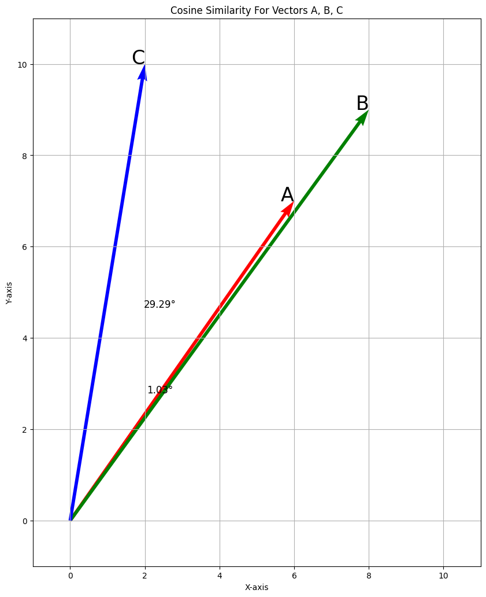
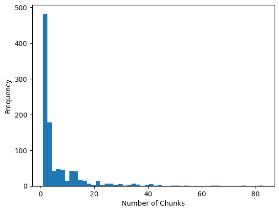

from sentence_transformers import SentenceTransformer
MODEL_ID = "intfloat/multilingual-e5-base"
model = SentenceTransformer(MODEL_ID)Semantic Search
with
Elasticsearch
Karel Minařík
How does a watch work?
What Is Semantic Search?
What Is Semantic Search?
Lexical (“traditional”): terms and frequencies
Semantic (“vector”): embeddings and similarity
“Meaning”, not “words”
The “vocabulary mismatch” problem
Other modalities (images, sounds, …) The Library and the Maze (CZ PyCon 2023)
→ txt.cohere.com/what-is-semantic-search
What Is Semantic Search?
What Are Text Embeddings?
What Are Text Embeddings?
Basic mechanism for natural language processing
(LLMs, machine translation, sentiment analysis, …)Numerical representations of text content
(Words, phrases, sentences, paragraphs, …)“GPS coordinates” for meaning
(Hundreds or thousands of dimensions)Generated by a pre-trained model
→ pinecone.io/learn/vector-embeddings-for-developers
What Are Text Embeddings?
What is Semantic Similarity?
\[ \cos(\theta) = \frac{\sum_{i=1}^{n}A_iB_i}{\sqrt{\sum_{i=1}^{n}A_i^2} \cdot \sqrt{\sum_{i=1}^{n}B_i^2}} \]
\[ \cos(\theta) = \frac{\sum_{i=1}^{n}A_iB_i}{\sqrt{\sum_{i=1}^{n}A_i^2} \cdot \sqrt{\sum_{i=1}^{n}B_i^2}} \]
Embeddings are just “lists of numbers”
GPS:
[50.0905214, 14.3995431]Word:
[0.0373, 0.0511, -0.0032, 0.0602, …]Calculate distances (Euclidean distance, dot product similarity, cosine similarity)
→ pinecone.io/learn/vector-similarity/
What is Semantic Similarity?
import numpy as np
from sklearn.metrics.pairwise import cosine_similarity
import matplotlib.pyplot as plt
# Define three vectors
A = np.array([6,7])
B = np.array([8,9])
C = np.array([2,10])
# Stack vectors into a single matrix
vectors = np.vstack([A, B, C])
print(vectors)
# Calculate cosine similarity matrix
cos_sim_matrix = cosine_similarity(vectors)
# Calculate angles in degrees
theta_AB = np.arccos(cos_sim_matrix[0, 1]) * (180 / np.pi)
theta_AC = np.arccos(cos_sim_matrix[0, 2]) * (180 / np.pi)
# Origin coordinates
origin = np.zeros((3, 2))
# Display the "quiver" chart
plt.figure(figsize=(10, 12.3))
plt.title("Cosine Similarity For Vectors A, B, C")
plt.quiver(origin[:, 0], origin[:, 1], vectors[:, 0], vectors[:, 1],
angles='xy', scale_units='xy', scale=1, color=['r', 'g', 'b'])
plt.xlim(-1, 11)
plt.ylim(-1, 11)
plt.xlabel("X-axis")
plt.ylabel("Y-axis")
plt.grid()
plt.text(A[0], A[1], 'A', color='black', fontsize=24, ha='right')
plt.text(B[0], B[1], 'B', color='black', fontsize=24, ha='right')
plt.text(C[0], C[1], 'C', color='black', fontsize=24, ha='right')
plt.text(A[0] / 2.5, A[1] / 2.5, f'{theta_AB:.2f}°', color='black', fontsize=12, ha='center')
plt.text(A[0] / 2.5, A[1] / 1.5, f'{theta_AC:.2f}°', color='black', fontsize=12, ha='center')
plt.show()[[ 6 7]
[ 8 9]
[ 2 10]]
Generating Embeddings
Generate Embeddings for Multiple Words
sentence_transformers.SentenceTransformer.encode
import pandas as pd
words = ["cat", "mouse", "house", "kitten", "clock"]
df = pd.DataFrame(
[ [model.encode(PASSAGE_PREFIX + word)] for word in words ],
index=words, columns=["embeddings"])
df| embeddings | |
|---|---|
| cat | [0.021156617, -0.00069385127, -0.015012221, 0.... |
| mouse | [0.0007892736, 0.012299454, -0.0062992857, 0.0... |
| house | [0.016028672, 0.01198161, -0.019900559, 0.0164... |
| kitten | [0.018304918, -0.010472597, -0.0055162413, 0.0... |
| clock | [-0.0146252755, 0.016221017, -0.012604436, 0.0... |
Compute Cosine Similarity
sklearn.metrics.pairwise.cosine_similarity
sklearn.preprocessing.MinMaxScaler
query = "cat"
query_emb = model.encode(QUERY_PREFIX + query)
similarities = {}
# Compute similarities
from sklearn.metrics.pairwise import cosine_similarity
for word, word_emb in df["embeddings"].items():
similarities[word] = cosine_similarity(
[query_emb],
[word_emb]
)[0][0]
# Original similarities
scores = list(similarities.values())
# Normalized similarities
from sklearn.preprocessing import MinMaxScaler
scaler = MinMaxScaler()
normalized_scores = \
scaler.fit_transform(
np.array(scores).reshape(-1, 1)).flatten()
display(
pd.DataFrame({
"Word": [f"{query} ⇔ {k}" for k in similarities.keys()],
"Similarity": similarities.values(),
})
.sort_values(by=["Similarity"], ascending=False)
.style
.hide(axis="index")
.format(precision=4)
.set_caption("Original")
.set_table_attributes('class="dataframe small"')
.bar(subset=['Similarity'], color='#999')
)
display(
pd.DataFrame({
"Word": [f"{query} ⇔ {k}" for k in similarities.keys()],
"Similarity": normalized_scores,
})
.sort_values(by=["Similarity"], ascending=False)
.style
.hide(axis="index")
.format(precision=4)
.set_caption("Normalized")
.set_table_attributes('class="dataframe small"')
.bar(subset=['Similarity'], color='#999')
)| Word | Similarity |
|---|---|
| cat ⇔ cat | 0.8910 |
| cat ⇔ kitten | 0.8655 |
| cat ⇔ mouse | 0.8249 |
| cat ⇔ house | 0.8015 |
| cat ⇔ clock | 0.7940 |
| Word | Similarity |
|---|---|
| cat ⇔ cat | 1.0000 |
| cat ⇔ kitten | 0.7378 |
| cat ⇔ mouse | 0.3186 |
| cat ⇔ house | 0.0781 |
| cat ⇔ clock | 0.0000 |
You Know, for Search!
The Workflow
- Pre-process the data
- Generate embeddings
- Index embeddings
- Search the data
- Evaluate search quality
The Outcome

wikimedia/wikipedia
Pre-process the Data
- Assumption: the data is text-based
- Split the text into semantic units (“chunks”)
- Chapters, paragraphs, sentences, …
- Limited by the model context window
➊ Pre-process the Data
Astronomie, řecky αστρονομία z άστρον (astron) hvězda a νόμος (nomos) zákon, česky též hvězdářství, je věda, která se zabývá jevy za hranicemi zemské atmosféry. Zvláště tedy výzkumem vesmírných těles, jejich soustav, různých dějů ve vesmíru i vesmírem jako celkem.
Historie astronomie
Antika
Astronomie se podobně jako další vědy začala rozvíjet ve starověku. Na území Babylonie však nebylo k popisu používáno již vynalezené geometrie (grafy). První se z astronomie rozvíjela astrometrie, zabývající se měřením poloh hvězd a planet na obloze. Tato oblast astronomie měla velký význam pro navigaci. Podstatnou částí astrometrie je sférická astronomie sloužící k popisu poloh objektů na nebeské sféře, zavádí souřadnice a popisuje významné křivky a body na nebeské sféře. Pojmy ze sférické astronomie se také používají při měření času.
Další oblastí astronomie, která se rozvinula, byla nebeská mechanika. Zabývá se pohybem těles v gravitačním poli, například planet ve sluneční soustavě. Základem nebeské mechaniky jsou práce Keplera a Newtona.
Aristotelés ve svém díle O nebi z roku 340 př. n. l. dokázal, že tvar Země musí být kulatý, jelikož stín Země na Měsíci je při zatmění vždy kulatý, což by při plochém tvaru Země nebylo možné. Řekové také zjistili, že pokud sledujeme Polárku z jižnějšího místa na Zemi, jeví se nám níže nad obzorem než pro pozorovatele ze severu, kterému se bude její poloha na obloze jevit výše. Aristotelés dále určil poloměr Země, který ale odhadl na dvojnásobek skutečného poloměru. V aristotelovském modelu Země stojí Měsíc se Sluncem a hvězdami krouží kolem ní, a to po kruhových drahách.
Myšlenky Aristotelovy rozvinul ve 2. století našeho letopočtu Klaudios Ptolemaios, který také stavěl Zemi do středu a další objekty nechal obíhat kolem ní ve sférách:
první byla sféra Měsíce,
dále sféry sluneční soustavy – Slunce a planet : Merkuru, Venuše, Marsu, Jupitera, Saturna a
sféra stálic – hvězd, jež byly považovány za nehybné, jak to plyne z názvu, měly se pohybovat jen společně s oblohou. Tento model dostatečně vyhovoval polohám těles na obloze.
Novověk
Roku 1514 navrhl Mikuláš Koperník nový model, ve kterém bylo ve středu soustavy Slunce a planety obíhaly kolem něj po kruhových drahách, setkal se ale s problémy při pozorováních, objekty se nenacházely na správných souřadnicích.
Roku 1609 zkonstruoval Galileo Galilei dalekohled, s jehož pomocí objevil čtyři měsíce obíhající kolem planety Jupiter, a tím dokázal Koperníkovu teorii o Slunci ve středu a planetách kroužících kolem.
Johannes Kepler zaměnil kruhové dráhy planet za eliptické, čímž bylo dosaženo souladu s pozorovanými polohami těles.
V roce 1687 vydal sir Isaac Newton knihu Philosophiae Naturalis Principia Mathematica o poloze těles v prostoru a čase a zákon obecné přitažlivosti, podle něhož jsou k sobě tělesa vázána gravitací, která závisí na hmotnosti těles a na jejich vzdálenosti. Z gravitačního zákona vychází eliptický pohyb planet.
Nová doba
Roku 1929 studoval Edwin Hubble daleké galaxie, zjistil rudý posuv, který se zvětšuje se vzdáleností, to byl důkaz o rozpínání vesmíru. Fakt, že se od sebe objekty vzdalují, naznačuje, že někdy v minulosti byly objekty velmi blízko od sebe, tím se zrodily myšlenky o velkém třesku, místě a čase, kdy byl vesmír nekonečně malý a hustý.
V letech 1905–1915 napsal Albert Einstein teorii relativity – speciální, ve které zavedl konečnou rychlost světla a obecnou relativitu o gravitaci, čase a prostoru ve velkých rozměrech. Na začátku 20. století vznikla kvantová teorie o chování elementárních částic.
Čínská astronomie
Čínská astronomie má velice dlouhou historii a dějepisci považují Číňany za „nejdůslednější a nejpřesnější pozorovatele nebeských jevů na světě před Araby.“ Jména hvězd později rozdělili do 28 kategorií („panství“, [říší]) v dobách dynastie Šang (Shang) v čínské době bronzové a zřejmě se zformovaly za vlády Wu-Tinga (Wu Ding) (1339–1281 př. n. l.).
Podrobné záznamy astrologických pozorování započaly v éře válek kolem 4. století př. n. l. a vzkvétaly dále od období dynastie Chan. Čínská astronomie byla rovníková soustředěná na podrobná pozorování hvězd z okolí pólu a byla založená na jiných principech než převládaly v západoevropské astronomii, kde východ a západ slunce zodiakálních souhvězdí tvořil základní ekliptický rámec.
Některé prvky indické astronomie se dostaly do Číny při expanzi buddhismu po dynastii Chan (25–220 n.l.), ale nejpodrobnější vtělení indické astronomie nastalo za dynastie Tchang (Tang, 618–907), kdy mnozí indičtí astronomové přesídlili do čínského hlavního města a čínští učenci, jako velký tantrický buddhistický mnich a matematik Ji-Šing (Yi Xing) propracoval její systém. Astronomie islámského středověku úzce spolupracovala se svými čínskými kolegy během dynastie Juan (Yuan) a po období poměrného ústupu za dynastie Ming astronomie ožila podněty západní kosmologie a techniky po vzniku jezuitských misií. Dalekohled byl zaveden v 17. století. V roce 1669 byla pekingská observatoř přestavěna pod vedením Ferdinanda Verbiesta. Dnešní Čína pokračuje v astronomických aktivitách s mnoha hvězdárnami a vlastním vesmírným programem.
Části astronomie
Od novověku do současnosti se astronomie nesmírně rozšířila a vznikla celá řada nových oblastí výzkumu, které lze velmi zhruba rozdělit na pozorování a teorii, nebo podle objektu zájmu.
Astronomické pozorování
Astronom, česky hvězdář, se zabývá zkoumáním vesmíru. Kromě profesionálních astronomů se astronomii věnuje i řada astronomů amatérských.
Nejvýznamnějším zdrojem informací o vesmíru je elektromagnetické záření. Část jeho vlnových délek, vnímatelná očima, je světlo. Obory astronomického pozorování podle využívaných vlnových délek jsou
gama astronomie
rentgenová astronomie
ultrafialová astronomie
optická astronomie
infračervená astronomie
mikrovlnná astronomie
radioastronomie
Nejstarší a nejdůležitější je optická astronomie, využívající světlo. Rozvoj dalších oborů souvisel s vývojem techniky. Například radioastronomie se začala rozvíjet ve 30. letech 20. století, kdy Karl Guthe Jansky při zkoumání zdrojů šumu rušících rádiové hovory objevil rádiové emise centra naší Galaxie. Atmosféra Země mnoho vlnových délek účinně pohlcuje, takže gama a rentgenové pozorování se mohlo konat jen pomocí stratosférických balónů a výrazný rozvoj se dostavil teprve s pokrokem kosmonautiky.
Ještě exotičtější je pozorování jiných částic než elektromagnetického záření.
neutrinová astronomie pozoruje neutrina, teleskopy jsou v současnosti velké prostory hluboko pod zemí, zaplněné vodou nebo jiným pozorovacím médiem
studium kosmického záření, vysokoenergetických částic mimozemského původu. Využívá metod jaderné fyziky (v kosmickém záření se vyskytují i částice s o mnoho řádů větší energií než jaká je dosažitelná na urychlovačích).
Hypotetická gravitační astronomie by měla pozorovat gravitační vlny. V současnosti jsou převažujícím způsobem detekce velké interferometry. První pozorování gravitačních vln proběhlo 14. září 2015 na americkém detektoru LIGO, i když nepřímé důkazy byly předloženy již dříve.
Astronomická teorie
Obecným teoretickým oborem je astrofyzika. Zabývá se fyzikou hvězd a mezihvězdné hmoty (hustotou, teplotou, chemickým složením atd.).
Kosmologie studuje vesmír jako celek a zvláště jeho vznik, současný a budoucí vývoj.
Astrobiologie se zabývá možnostmi existence života ve vesmíru.
Astronomie podle objektu zájmu
Hvězdná astronomie se zabývá hvězdami, včetně Slunce; výzkumem prostorového rozložení a zákonitostmi pohybů hvězd a hvězdných soustav.
Podle metody výzkumu se dělí na: 1. stelární statistiku, 2. stelární kinematiku, 3. stelární dynamiku
Galaktická astronomie se zabývá zkoumáním struktury, součástí a vývoje galaxií – v prvé řadě naší Galaxie.
Extragalaktická astronomie zkoumá objekty za hranicemi naší Galaxie.
Planetární vědy zkoumají planety v naší sluneční soustavě. Řadí se do astronomie, ale jejich části mají často užší spojitost s odpovídajícími vědami o planetě Zemi (například geologie Marsu).
Meteorická astronomie se zabývá studiem pohybu a dalšími vlastnostmi meteorů a meteoritů.
Vztah astronomie k dalším vědám
Astronomie má nejužší vztah s fyzikou. Astronomická teorie je v podstatě fyzika astronomických systémů. Naopak astronomické systémy jsou pro velkou část fyzikální teorie nejdůležitější „laboratoří“, přirozeně především ve velkých prostorových a časových měřítkách se projevuje gravitace a testuje obecná teorie relativity. Ve vesmíru se vyskytují i extrémní podmínky, které nejsou zatím dosažitelné v laboratořích, například tlak, hustota, teplota, magnetické pole a další.
Významný vztah má astronomie i k religionistice.
Odkazy
Reference
Související články
Astrofyzika
Astronomický ústav AV
Hvězda
Planeta
Sluneční soustava
Souhvězdí
Vesmír
Externí odkazy
Přírodní vědy
Sedm svobodných uměníSplit Text to Paragraphs
➊ Pre-process the Data
Astronomie, řecky αστρονομία z άστρον (astron) hvězda a νόμος (nomos) zákon, česky též hvězdářství, je věda, která se zabývá jevy za hranicemi zemské atmosféry. Zvláště tedy výzkumem vesmírných těles, jejich soustav, různých dějů ve vesmíru i vesmírem jako celkem.
━━━━━
Historie astronomie
━━━━━
Antika
Astronomie se podobně jako další vědy začala rozvíjet ve starověku. Na území Babylonie však nebylo k popisu používáno již vynalezené geometrie (grafy). První se z astronomie rozvíjela astrometrie, zabývající se měřením poloh hvězd a planet na obloze. Tato oblast astronomie měla velký význam pro navigaci. Podstatnou částí astrometrie je sférická astronomie sloužící k popisu poloh objektů na nebeské sféře, zavádí souřadnice a popisuje významné křivky a body na nebeské sféře. Pojmy ze sférické astronomie se také používají při měření času.
━━━━━
Další oblastí astronomie, která se rozvinula, byla nebeská mechanika. Zabývá se pohybem těles v gravitačním poli, například planet ve sluneční soustavě. Základem nebeské mechaniky jsou práce Keplera a Newtona.
━━━━━
Aristotelés ve svém díle O nebi z roku 340 př. n. l. dokázal, že tvar Země musí být kulatý, jelikož stín Země na Měsíci je při zatmění vždy kulatý, což by při plochém tvaru Země nebylo možné. Řekové také zjistili, že pokud sledujeme Polárku z jižnějšího místa na Zemi, jeví se nám níže nad obzorem než pro pozorovatele ze severu, kterému se bude její poloha na obloze jevit výše. Aristotelés dále určil poloměr Země, který ale odhadl na dvojnásobek skutečného poloměru. V aristotelovském modelu Země stojí Měsíc se Sluncem a hvězdami krouží kolem ní, a to po kruhových drahách.
Myšlenky Aristotelovy rozvinul ve 2. století našeho letopočtu Klaudios Ptolemaios, který také stavěl Zemi do středu a další objekty nechal obíhat kolem ní ve sférách:
první byla sféra Měsíce,
dále sféry sluneční soustavy – Slunce a planet : Merkuru, Venuše, Marsu, Jupitera, Saturna a
sféra stálic – hvězd, jež byly považovány za nehybné, jak to plyne z názvu, měly se pohybovat jen společně s oblohou. Tento model dostatečně vyhovoval polohám těles na obloze.
━━━━━
Novověk
Roku 1514 navrhl Mikuláš Koperník nový model, ve kterém bylo ve středu soustavy Slunce a planety obíhaly kolem něj po kruhových drahách, setkal se ale s problémy při pozorováních, objekty se nenacházely na správných souřadnicích.
━━━━━
Roku 1609 zkonstruoval Galileo Galilei dalekohled, s jehož pomocí objevil čtyři měsíce obíhající kolem planety Jupiter, a tím dokázal Koperníkovu teorii o Slunci ve středu a planetách kroužících kolem.
━━━━━
Johannes Kepler zaměnil kruhové dráhy planet za eliptické, čímž bylo dosaženo souladu s pozorovanými polohami těles.
━━━━━
V roce 1687 vydal sir Isaac Newton knihu Philosophiae Naturalis Principia Mathematica o poloze těles v prostoru a čase a zákon obecné přitažlivosti, podle něhož jsou k sobě tělesa vázána gravitací, která závisí na hmotnosti těles a na jejich vzdálenosti. Z gravitačního zákona vychází eliptický pohyb planet.
━━━━━
Nová doba
Roku 1929 studoval Edwin Hubble daleké galaxie, zjistil rudý posuv, který se zvětšuje se vzdáleností, to byl důkaz o rozpínání vesmíru. Fakt, že se od sebe objekty vzdalují, naznačuje, že někdy v minulosti byly objekty velmi blízko od sebe, tím se zrodily myšlenky o velkém třesku, místě a čase, kdy byl vesmír nekonečně malý a hustý.
━━━━━
V letech 1905–1915 napsal Albert Einstein teorii relativity – speciální, ve které zavedl konečnou rychlost světla a obecnou relativitu o gravitaci, čase a prostoru ve velkých rozměrech. Na začátku 20. století vznikla kvantová teorie o chování elementárních částic.
━━━━━
Čínská astronomie
━━━━━
Čínská astronomie má velice dlouhou historii a dějepisci považují Číňany za „nejdůslednější a nejpřesnější pozorovatele nebeských jevů na světě před Araby.“ Jména hvězd později rozdělili do 28 kategorií („panství“, [říší]) v dobách dynastie Šang (Shang) v čínské době bronzové a zřejmě se zformovaly za vlády Wu-Tinga (Wu Ding) (1339–1281 př. n. l.).
━━━━━
Podrobné záznamy astrologických pozorování započaly v éře válek kolem 4. století př. n. l. a vzkvétaly dále od období dynastie Chan. Čínská astronomie byla rovníková soustředěná na podrobná pozorování hvězd z okolí pólu a byla založená na jiných principech než převládaly v západoevropské astronomii, kde východ a západ slunce zodiakálních souhvězdí tvořil základní ekliptický rámec.
━━━━━
Některé prvky indické astronomie se dostaly do Číny při expanzi buddhismu po dynastii Chan (25–220 n.l.), ale nejpodrobnější vtělení indické astronomie nastalo za dynastie Tchang (Tang, 618–907), kdy mnozí indičtí astronomové přesídlili do čínského hlavního města a čínští učenci, jako velký tantrický buddhistický mnich a matematik Ji-Šing (Yi Xing) propracoval její systém. Astronomie islámského středověku úzce spolupracovala se svými čínskými kolegy během dynastie Juan (Yuan) a po období poměrného ústupu za dynastie Ming astronomie ožila podněty západní kosmologie a techniky po vzniku jezuitských misií. Dalekohled byl zaveden v 17. století. V roce 1669 byla pekingská observatoř přestavěna pod vedením Ferdinanda Verbiesta. Dnešní Čína pokračuje v astronomických aktivitách s mnoha hvězdárnami a vlastním vesmírným programem.
━━━━━
Části astronomie
Od novověku do současnosti se astronomie nesmírně rozšířila a vznikla celá řada nových oblastí výzkumu, které lze velmi zhruba rozdělit na pozorování a teorii, nebo podle objektu zájmu.
━━━━━
Astronomické pozorování
Astronom, česky hvězdář, se zabývá zkoumáním vesmíru. Kromě profesionálních astronomů se astronomii věnuje i řada astronomů amatérských.
━━━━━
Nejvýznamnějším zdrojem informací o vesmíru je elektromagnetické záření. Část jeho vlnových délek, vnímatelná očima, je světlo. Obory astronomického pozorování podle využívaných vlnových délek jsou
━━━━━
gama astronomie
rentgenová astronomie
ultrafialová astronomie
optická astronomie
infračervená astronomie
mikrovlnná astronomie
radioastronomie
━━━━━
Nejstarší a nejdůležitější je optická astronomie, využívající světlo. Rozvoj dalších oborů souvisel s vývojem techniky. Například radioastronomie se začala rozvíjet ve 30. letech 20. století, kdy Karl Guthe Jansky při zkoumání zdrojů šumu rušících rádiové hovory objevil rádiové emise centra naší Galaxie. Atmosféra Země mnoho vlnových délek účinně pohlcuje, takže gama a rentgenové pozorování se mohlo konat jen pomocí stratosférických balónů a výrazný rozvoj se dostavil teprve s pokrokem kosmonautiky.
━━━━━
Ještě exotičtější je pozorování jiných částic než elektromagnetického záření.
neutrinová astronomie pozoruje neutrina, teleskopy jsou v současnosti velké prostory hluboko pod zemí, zaplněné vodou nebo jiným pozorovacím médiem
studium kosmického záření, vysokoenergetických částic mimozemského původu. Využívá metod jaderné fyziky (v kosmickém záření se vyskytují i částice s o mnoho řádů větší energií než jaká je dosažitelná na urychlovačích).
━━━━━
Hypotetická gravitační astronomie by měla pozorovat gravitační vlny. V současnosti jsou převažujícím způsobem detekce velké interferometry. První pozorování gravitačních vln proběhlo 14. září 2015 na americkém detektoru LIGO, i když nepřímé důkazy byly předloženy již dříve.
━━━━━
Astronomická teorie
Obecným teoretickým oborem je astrofyzika. Zabývá se fyzikou hvězd a mezihvězdné hmoty (hustotou, teplotou, chemickým složením atd.).
━━━━━
Kosmologie studuje vesmír jako celek a zvláště jeho vznik, současný a budoucí vývoj.
━━━━━
Astrobiologie se zabývá možnostmi existence života ve vesmíru.
━━━━━
Astronomie podle objektu zájmu
Hvězdná astronomie se zabývá hvězdami, včetně Slunce; výzkumem prostorového rozložení a zákonitostmi pohybů hvězd a hvězdných soustav.
Podle metody výzkumu se dělí na: 1. stelární statistiku, 2. stelární kinematiku, 3. stelární dynamiku
Galaktická astronomie se zabývá zkoumáním struktury, součástí a vývoje galaxií – v prvé řadě naší Galaxie.
Extragalaktická astronomie zkoumá objekty za hranicemi naší Galaxie.
Planetární vědy zkoumají planety v naší sluneční soustavě. Řadí se do astronomie, ale jejich části mají často užší spojitost s odpovídajícími vědami o planetě Zemi (například geologie Marsu).
Meteorická astronomie se zabývá studiem pohybu a dalšími vlastnostmi meteorů a meteoritů.
━━━━━
Vztah astronomie k dalším vědám
Astronomie má nejužší vztah s fyzikou. Astronomická teorie je v podstatě fyzika astronomických systémů. Naopak astronomické systémy jsou pro velkou část fyzikální teorie nejdůležitější „laboratoří“, přirozeně především ve velkých prostorových a časových měřítkách se projevuje gravitace a testuje obecná teorie relativity. Ve vesmíru se vyskytují i extrémní podmínky, které nejsou zatím dosažitelné v laboratořích, například tlak, hustota, teplota, magnetické pole a další.
━━━━━
Významný vztah má astronomie i k religionistice.
━━━━━
Odkazy
━━━━━
Reference
━━━━━
Související články
Astrofyzika
Astronomický ústav AV
Hvězda
Planeta
Sluneční soustava
Souhvězdí
Vesmír
━━━━━
Externí odkazy
━━━━━
Přírodní vědy
Sedm svobodných umění
━━━━━Split Paragraphs to Sentences
➊ Pre-process the Data
import re
from corpy.morphodita import Tokenizer
sentence_splitter = Tokenizer("czech")
def split_to_sentences(text):
RE_PUNCT = re.compile(r'[,:;\.?!“"]+')
sentences = []
for part in sentence_splitter.tokenize(text, sents=True):
sentence = ""
for i, token in enumerate(part):
space = "" if RE_PUNCT.match(token) or i == 0 else " "
sentence += space + token
sentences.append(sentence)
return sentences
for paragraph in split_to_paraghraps(ds[1]["text"]):
for sentence in split_to_sentences(paragraph):
print("✢", sentence)
print("━━━━━")✢ Astronomie, řecky αστρονομία z άστρον ( astron ) hvězda a νόμος ( nomos ) zákon, česky též hvězdářství, je věda, která se zabývá jevy za hranicemi zemské atmosféry.
✢ Zvláště tedy výzkumem vesmírných těles, jejich soustav, různých dějů ve vesmíru i vesmírem jako celkem.
━━━━━
✢ Historie astronomie
━━━━━
✢ Antika Astronomie se podobně jako další vědy začala rozvíjet ve starověku.
✢ Na území Babylonie však nebylo k popisu používáno již vynalezené geometrie ( grafy ).
✢ První se z astronomie rozvíjela astrometrie, zabývající se měřením poloh hvězd a planet na obloze.
✢ Tato oblast astronomie měla velký význam pro navigaci.
✢ Podstatnou částí astrometrie je sférická astronomie sloužící k popisu poloh objektů na nebeské sféře, zavádí souřadnice a popisuje významné křivky a body na nebeské sféře.
✢ Pojmy ze sférické astronomie se také používají při měření času.
━━━━━
✢ Další oblastí astronomie, která se rozvinula, byla nebeská mechanika.
✢ Zabývá se pohybem těles v gravitačním poli, například planet ve sluneční soustavě.
✢ Základem nebeské mechaniky jsou práce Keplera a Newtona.
━━━━━
✢ Aristotelés ve svém díle O nebi z roku 340 př. n. l. dokázal, že tvar Země musí být kulatý, jelikož stín Země na Měsíci je při zatmění vždy kulatý, což by při plochém tvaru Země nebylo možné.
✢ Řekové také zjistili, že pokud sledujeme Polárku z jižnějšího místa na Zemi, jeví se nám níže nad obzorem než pro pozorovatele ze severu, kterému se bude její poloha na obloze jevit výše.
✢ Aristotelés dále určil poloměr Země, který ale odhadl na dvojnásobek skutečného poloměru.
✢ V aristotelovském modelu Země stojí Měsíc se Sluncem a hvězdami krouží kolem ní, a to po kruhových drahách.
✢ Myšlenky Aristotelovy rozvinul ve 2. století našeho letopočtu Klaudios Ptolemaios, který také stavěl Zemi do středu a další objekty nechal obíhat kolem ní ve sférách: první byla sféra Měsíce, dále sféry sluneční soustavy – Slunce a planet: Merkuru, Venuše, Marsu, Jupitera, Saturna a sféra stálic – hvězd, jež byly považovány za nehybné, jak to plyne z názvu, měly se pohybovat jen společně s oblohou.
✢ Tento model dostatečně vyhovoval polohám těles na obloze.
━━━━━
✢ Novověk Roku 1514 navrhl Mikuláš Koperník nový model, ve kterém bylo ve středu soustavy Slunce a planety obíhaly kolem něj po kruhových drahách, setkal se ale s problémy při pozorováních, objekty se nenacházely na správných souřadnicích.
━━━━━
✢ Roku 1609 zkonstruoval Galileo Galilei dalekohled, s jehož pomocí objevil čtyři měsíce obíhající kolem planety Jupiter, a tím dokázal Koperníkovu teorii o Slunci ve středu a planetách kroužících kolem.
━━━━━
✢ Johannes Kepler zaměnil kruhové dráhy planet za eliptické, čímž bylo dosaženo souladu s pozorovanými polohami těles.
━━━━━
✢ V roce 1687 vydal sir Isaac Newton knihu Philosophiae Naturalis Principia Mathematica o poloze těles v prostoru a čase a zákon obecné přitažlivosti, podle něhož jsou k sobě tělesa vázána gravitací, která závisí na hmotnosti těles a na jejich vzdálenosti.
✢ Z gravitačního zákona vychází eliptický pohyb planet.
━━━━━
✢ Nová doba Roku 1929 studoval Edwin Hubble daleké galaxie, zjistil rudý posuv, který se zvětšuje se vzdáleností, to byl důkaz o rozpínání vesmíru.
✢ Fakt, že se od sebe objekty vzdalují, naznačuje, že někdy v minulosti byly objekty velmi blízko od sebe, tím se zrodily myšlenky o velkém třesku, místě a čase, kdy byl vesmír nekonečně malý a hustý.
━━━━━
✢ V letech 1905 – 1915 napsal Albert Einstein teorii relativity – speciální, ve které zavedl konečnou rychlost světla a obecnou relativitu o gravitaci, čase a prostoru ve velkých rozměrech.
✢ Na začátku 20. století vznikla kvantová teorie o chování elementárních částic.
━━━━━
✢ Čínská astronomie
━━━━━
✢ Čínská astronomie má velice dlouhou historii a dějepisci považují Číňany za „ nejdůslednější a nejpřesnější pozorovatele nebeských jevů na světě před Araby.“ Jména hvězd později rozdělili do 28 kategorií ( „ panství“, [ říší ] ) v dobách dynastie Šang ( Shang ) v čínské době bronzové a zřejmě se zformovaly za vlády Wu - Tinga ( Wu Ding ) ( 1339 – 1281 př. n. l. ).
━━━━━
✢ Podrobné záznamy astrologických pozorování započaly v éře válek kolem 4. století př. n. l. a vzkvétaly dále od období dynastie Chan.
✢ Čínská astronomie byla rovníková soustředěná na podrobná pozorování hvězd z okolí pólu a byla založená na jiných principech než převládaly v západoevropské astronomii, kde východ a západ slunce zodiakálních souhvězdí tvořil základní ekliptický rámec.
━━━━━
✢ Některé prvky indické astronomie se dostaly do Číny při expanzi buddhismu po dynastii Chan ( 25 – 220 n. l. ), ale nejpodrobnější vtělení indické astronomie nastalo za dynastie Tchang ( Tang, 618 – 907 ), kdy mnozí indičtí astronomové přesídlili do čínského hlavního města a čínští učenci, jako velký tantrický buddhistický mnich a matematik Ji - Šing ( Yi Xing ) propracoval její systém.
✢ Astronomie islámského středověku úzce spolupracovala se svými čínskými kolegy během dynastie Juan ( Yuan ) a po období poměrného ústupu za dynastie Ming astronomie ožila podněty západní kosmologie a techniky po vzniku jezuitských misií.
✢ Dalekohled byl zaveden v 17. století.
✢ V roce 1669 byla pekingská observatoř přestavěna pod vedením Ferdinanda Verbiesta.
✢ Dnešní Čína pokračuje v astronomických aktivitách s mnoha hvězdárnami a vlastním vesmírným programem.
━━━━━
✢ Části astronomie Od novověku do současnosti se astronomie nesmírně rozšířila a vznikla celá řada nových oblastí výzkumu, které lze velmi zhruba rozdělit na pozorování a teorii, nebo podle objektu zájmu.
━━━━━
✢ Astronomické pozorování Astronom, česky hvězdář, se zabývá zkoumáním vesmíru.
✢ Kromě profesionálních astronomů se astronomii věnuje i řada astronomů amatérských.
━━━━━
✢ Nejvýznamnějším zdrojem informací o vesmíru je elektromagnetické záření.
✢ Část jeho vlnových délek, vnímatelná očima, je světlo.
✢ Obory astronomického pozorování podle využívaných vlnových délek jsou
━━━━━
✢ gama astronomie rentgenová astronomie ultrafialová astronomie optická astronomie infračervená astronomie mikrovlnná astronomie radioastronomie
━━━━━
✢ Nejstarší a nejdůležitější je optická astronomie, využívající světlo.
✢ Rozvoj dalších oborů souvisel s vývojem techniky.
✢ Například radioastronomie se začala rozvíjet ve 30. letech 20. století, kdy Karl Guthe Jansky při zkoumání zdrojů šumu rušících rádiové hovory objevil rádiové emise centra naší Galaxie.
✢ Atmosféra Země mnoho vlnových délek účinně pohlcuje, takže gama a rentgenové pozorování se mohlo konat jen pomocí stratosférických balónů a výrazný rozvoj se dostavil teprve s pokrokem kosmonautiky.
━━━━━
✢ Ještě exotičtější je pozorování jiných částic než elektromagnetického záření. neutrinová astronomie pozoruje neutrina, teleskopy jsou v současnosti velké prostory hluboko pod zemí, zaplněné vodou nebo jiným pozorovacím médiem studium kosmického záření, vysokoenergetických částic mimozemského původu.
✢ Využívá metod jaderné fyziky ( v kosmickém záření se vyskytují i částice s o mnoho řádů větší energií než jaká je dosažitelná na urychlovačích ).
━━━━━
✢ Hypotetická gravitační astronomie by měla pozorovat gravitační vlny.
✢ V současnosti jsou převažujícím způsobem detekce velké interferometry.
✢ První pozorování gravitačních vln proběhlo 14. září 2015 na americkém detektoru LIGO, i když nepřímé důkazy byly předloženy již dříve.
━━━━━
✢ Astronomická teorie Obecným teoretickým oborem je astrofyzika.
✢ Zabývá se fyzikou hvězd a mezihvězdné hmoty ( hustotou, teplotou, chemickým složením atd. ).
━━━━━
✢ Kosmologie studuje vesmír jako celek a zvláště jeho vznik, současný a budoucí vývoj.
━━━━━
✢ Astrobiologie se zabývá možnostmi existence života ve vesmíru.
━━━━━
✢ Astronomie podle objektu zájmu Hvězdná astronomie se zabývá hvězdami, včetně Slunce; výzkumem prostorového rozložení a zákonitostmi pohybů hvězd a hvězdných soustav.
✢ Podle metody výzkumu se dělí na: 1. stelární statistiku, 2. stelární kinematiku, 3. stelární dynamiku Galaktická astronomie se zabývá zkoumáním struktury, součástí a vývoje galaxií – v prvé řadě naší Galaxie.
✢ Extragalaktická astronomie zkoumá objekty za hranicemi naší Galaxie.
✢ Planetární vědy zkoumají planety v naší sluneční soustavě.
✢ Řadí se do astronomie, ale jejich části mají často užší spojitost s odpovídajícími vědami o planetě Zemi ( například geologie Marsu ).
✢ Meteorická astronomie se zabývá studiem pohybu a dalšími vlastnostmi meteorů a meteoritů.
━━━━━
✢ Vztah astronomie k dalším vědám Astronomie má nejužší vztah s fyzikou.
✢ Astronomická teorie je v podstatě fyzika astronomických systémů.
✢ Naopak astronomické systémy jsou pro velkou část fyzikální teorie nejdůležitější „ laboratoří“, přirozeně především ve velkých prostorových a časových měřítkách se projevuje gravitace a testuje obecná teorie relativity.
✢ Ve vesmíru se vyskytují i extrémní podmínky, které nejsou zatím dosažitelné v laboratořích, například tlak, hustota, teplota, magnetické pole a další.
━━━━━
✢ Významný vztah má astronomie i k religionistice.
━━━━━
✢ Odkazy
━━━━━
✢ Reference
━━━━━
✢ Související články Astrofyzika Astronomický ústav AV Hvězda Planeta Sluneční soustava Souhvězdí Vesmír
━━━━━
✢ Externí odkazy
━━━━━
✢ Přírodní vědy Sedm svobodných umění
━━━━━Split Page into Chunks with Context Window Limit
➊ Pre-process the Data
import torch
prefix_token_count = len(model.tokenizer(PASSAGE_PREFIX)["input_ids"])
max_tokens = model.max_seq_length - model.tokenizer.num_special_tokens_to_add() - prefix_token_count
device = "cpu"
if torch.backends.mps.is_available():
device = "mps"
if torch.cuda.is_available():
device = "cuda"
model = model.to(device)
print(f"Using model [{MODEL_ID}] on [{model.device}] with maximum of [{max_tokens}] tokens")Using model [intfloat/multilingual-e5-base] on [mps:0] with maximum of [506] tokensSplit Page into Chunks with Context Window Limit
➊ Pre-process the Data
import transformers
transformers.logging.set_verbosity_error() # Prevent warnings for context window overflow
def generate_chunks(batch):
output = {"chunks": []}
for page in batch["text"]:
page_chunks = []
current_chunk = ""
for paragraph in split_to_paraghraps(page):
sentences = split_to_sentences(paragraph)
for sentence in sentences:
candidate_chunk = current_chunk + " " + sentence if current_chunk else sentence
candidate_chunk_tokenized = model.tokenizer(PASSAGE_PREFIX + candidate_chunk, truncation=False)
if len(candidate_chunk_tokenized["input_ids"]) <= max_tokens:
current_chunk = candidate_chunk
else:
page_chunks.append(current_chunk)
current_chunk = sentence
if current_chunk: # Add the last chunk if it's not empty
page_chunks.append(current_chunk)
output["chunks"].append(page_chunks)
return outputSplit Text into Chunks with Context Window Limit
➊ Pre-process the Data
ds_sample = ds.select(range(1000))
ds_chunked = ds_sample.map(
generate_chunks,
batched=True,
batch_size=1_000,
num_proc=16,
desc="Chunks",
load_from_cache_file=False) # Disable cachingAstronomie, řecky αστρονομία z άστρον ( astron ) hvězda a νόμος ( nomos ) zákon, česky též hvězdářství, je věda, která se zabývá jevy za hranicemi zemské atmosféry. Zvláště tedy výzkumem vesmírných těles, jejich soustav, různých dějů ve vesmíru i vesmírem jako celkem. Historie astronomie Antika Astronomie se podobně jako další vědy začala rozvíjet ve starověku. Na území Babylonie však nebylo k popisu používáno již vynalezené geometrie ( grafy ). První se z astronomie rozvíjela astrometrie, zabývající se měřením poloh hvězd a planet na obloze. Tato oblast astronomie měla velký význam pro navigaci. Podstatnou částí astrometrie je sférická astronomie sloužící k popisu poloh objektů na nebeské sféře, zavádí souřadnice a popisuje významné křivky a body na nebeské sféře. Pojmy ze sférické astronomie se také používají při měření času. Další oblastí astronomie, která se rozvinula, byla nebeská mechanika. Zabývá se pohybem těles v gravitačním poli, například planet ve sluneční soustavě. Základem nebeské mechaniky jsou práce Keplera a Newtona. Aristotelés ve svém díle O nebi z roku 340 př. n. l. dokázal, že tvar Země musí být kulatý, jelikož stín Země na Měsíci je při zatmění vždy kulatý, což by při plochém tvaru Země nebylo možné. Řekové také zjistili, že pokud sledujeme Polárku z jižnějšího místa na Zemi, jeví se nám níže nad obzorem než pro pozorovatele ze severu, kterému se bude její poloha na obloze jevit výše. Aristotelés dále určil poloměr Země, který ale odhadl na dvojnásobek skutečného poloměru. V aristotelovském modelu Země stojí Měsíc se Sluncem a hvězdami krouží kolem ní, a to po kruhových drahách.
━━━━━
Myšlenky Aristotelovy rozvinul ve 2. století našeho letopočtu Klaudios Ptolemaios, který také stavěl Zemi do středu a další objekty nechal obíhat kolem ní ve sférách: první byla sféra Měsíce, dále sféry sluneční soustavy – Slunce a planet: Merkuru, Venuše, Marsu, Jupitera, Saturna a sféra stálic – hvězd, jež byly považovány za nehybné, jak to plyne z názvu, měly se pohybovat jen společně s oblohou. Tento model dostatečně vyhovoval polohám těles na obloze. Novověk Roku 1514 navrhl Mikuláš Koperník nový model, ve kterém bylo ve středu soustavy Slunce a planety obíhaly kolem něj po kruhových drahách, setkal se ale s problémy při pozorováních, objekty se nenacházely na správných souřadnicích. Roku 1609 zkonstruoval Galileo Galilei dalekohled, s jehož pomocí objevil čtyři měsíce obíhající kolem planety Jupiter, a tím dokázal Koperníkovu teorii o Slunci ve středu a planetách kroužících kolem. Johannes Kepler zaměnil kruhové dráhy planet za eliptické, čímž bylo dosaženo souladu s pozorovanými polohami těles. V roce 1687 vydal sir Isaac Newton knihu Philosophiae Naturalis Principia Mathematica o poloze těles v prostoru a čase a zákon obecné přitažlivosti, podle něhož jsou k sobě tělesa vázána gravitací, která závisí na hmotnosti těles a na jejich vzdálenosti. Z gravitačního zákona vychází eliptický pohyb planet. Nová doba Roku 1929 studoval Edwin Hubble daleké galaxie, zjistil rudý posuv, který se zvětšuje se vzdáleností, to byl důkaz o rozpínání vesmíru. Fakt, že se od sebe objekty vzdalují, naznačuje, že někdy v minulosti byly objekty velmi blízko od sebe, tím se zrodily myšlenky o velkém třesku, místě a čase, kdy byl vesmír nekonečně malý a hustý.
━━━━━
V letech 1905 – 1915 napsal Albert Einstein teorii relativity – speciální, ve které zavedl konečnou rychlost světla a obecnou relativitu o gravitaci, čase a prostoru ve velkých rozměrech. Na začátku 20. století vznikla kvantová teorie o chování elementárních částic. Čínská astronomie Čínská astronomie má velice dlouhou historii a dějepisci považují Číňany za „ nejdůslednější a nejpřesnější pozorovatele nebeských jevů na světě před Araby.“ Jména hvězd později rozdělili do 28 kategorií ( „ panství“, [ říší ] ) v dobách dynastie Šang ( Shang ) v čínské době bronzové a zřejmě se zformovaly za vlády Wu - Tinga ( Wu Ding ) ( 1339 – 1281 př. n. l. ). Podrobné záznamy astrologických pozorování započaly v éře válek kolem 4. století př. n. l. a vzkvétaly dále od období dynastie Chan. Čínská astronomie byla rovníková soustředěná na podrobná pozorování hvězd z okolí pólu a byla založená na jiných principech než převládaly v západoevropské astronomii, kde východ a západ slunce zodiakálních souhvězdí tvořil základní ekliptický rámec. Některé prvky indické astronomie se dostaly do Číny při expanzi buddhismu po dynastii Chan ( 25 – 220 n. l. ), ale nejpodrobnější vtělení indické astronomie nastalo za dynastie Tchang ( Tang, 618 – 907 ), kdy mnozí indičtí astronomové přesídlili do čínského hlavního města a čínští učenci, jako velký tantrický buddhistický mnich a matematik Ji - Šing ( Yi Xing ) propracoval její systém. Astronomie islámského středověku úzce spolupracovala se svými čínskými kolegy během dynastie Juan ( Yuan ) a po období poměrného ústupu za dynastie Ming astronomie ožila podněty západní kosmologie a techniky po vzniku jezuitských misií. Dalekohled byl zaveden v 17. století.
━━━━━
V roce 1669 byla pekingská observatoř přestavěna pod vedením Ferdinanda Verbiesta. Dnešní Čína pokračuje v astronomických aktivitách s mnoha hvězdárnami a vlastním vesmírným programem. Části astronomie Od novověku do současnosti se astronomie nesmírně rozšířila a vznikla celá řada nových oblastí výzkumu, které lze velmi zhruba rozdělit na pozorování a teorii, nebo podle objektu zájmu. Astronomické pozorování Astronom, česky hvězdář, se zabývá zkoumáním vesmíru. Kromě profesionálních astronomů se astronomii věnuje i řada astronomů amatérských. Nejvýznamnějším zdrojem informací o vesmíru je elektromagnetické záření. Část jeho vlnových délek, vnímatelná očima, je světlo. Obory astronomického pozorování podle využívaných vlnových délek jsou gama astronomie rentgenová astronomie ultrafialová astronomie optická astronomie infračervená astronomie mikrovlnná astronomie radioastronomie Nejstarší a nejdůležitější je optická astronomie, využívající světlo. Rozvoj dalších oborů souvisel s vývojem techniky. Například radioastronomie se začala rozvíjet ve 30. letech 20. století, kdy Karl Guthe Jansky při zkoumání zdrojů šumu rušících rádiové hovory objevil rádiové emise centra naší Galaxie. Atmosféra Země mnoho vlnových délek účinně pohlcuje, takže gama a rentgenové pozorování se mohlo konat jen pomocí stratosférických balónů a výrazný rozvoj se dostavil teprve s pokrokem kosmonautiky. Ještě exotičtější je pozorování jiných částic než elektromagnetického záření. neutrinová astronomie pozoruje neutrina, teleskopy jsou v současnosti velké prostory hluboko pod zemí, zaplněné vodou nebo jiným pozorovacím médiem studium kosmického záření, vysokoenergetických částic mimozemského původu. Využívá metod jaderné fyziky ( v kosmickém záření se vyskytují i částice s o mnoho řádů větší energií než jaká je dosažitelná na urychlovačích ).
━━━━━
Hypotetická gravitační astronomie by měla pozorovat gravitační vlny. V současnosti jsou převažujícím způsobem detekce velké interferometry. První pozorování gravitačních vln proběhlo 14. září 2015 na americkém detektoru LIGO, i když nepřímé důkazy byly předloženy již dříve. Astronomická teorie Obecným teoretickým oborem je astrofyzika. Zabývá se fyzikou hvězd a mezihvězdné hmoty ( hustotou, teplotou, chemickým složením atd. ). Kosmologie studuje vesmír jako celek a zvláště jeho vznik, současný a budoucí vývoj. Astrobiologie se zabývá možnostmi existence života ve vesmíru. Astronomie podle objektu zájmu Hvězdná astronomie se zabývá hvězdami, včetně Slunce; výzkumem prostorového rozložení a zákonitostmi pohybů hvězd a hvězdných soustav. Podle metody výzkumu se dělí na: 1. stelární statistiku, 2. stelární kinematiku, 3. stelární dynamiku Galaktická astronomie se zabývá zkoumáním struktury, součástí a vývoje galaxií – v prvé řadě naší Galaxie. Extragalaktická astronomie zkoumá objekty za hranicemi naší Galaxie. Planetární vědy zkoumají planety v naší sluneční soustavě. Řadí se do astronomie, ale jejich části mají často užší spojitost s odpovídajícími vědami o planetě Zemi ( například geologie Marsu ). Meteorická astronomie se zabývá studiem pohybu a dalšími vlastnostmi meteorů a meteoritů. Vztah astronomie k dalším vědám Astronomie má nejužší vztah s fyzikou. Astronomická teorie je v podstatě fyzika astronomických systémů. Naopak astronomické systémy jsou pro velkou část fyzikální teorie nejdůležitější „ laboratoří“, přirozeně především ve velkých prostorových a časových měřítkách se projevuje gravitace a testuje obecná teorie relativity. Ve vesmíru se vyskytují i extrémní podmínky, které nejsou zatím dosažitelné v laboratořích, například tlak, hustota, teplota, magnetické pole a další. Významný vztah má astronomie i k religionistice. Odkazy
━━━━━
Reference Související články Astrofyzika Astronomický ústav AV Hvězda Planeta Sluneční soustava Souhvězdí Vesmír Externí odkazy Přírodní vědy Sedm svobodných umění
━━━━━Inspect the Data
➊ Pre-process the Data
num_tokens = np.array([
len(model.tokenizer(PASSAGE_PREFIX + chunk, truncation=False)['input_ids'])
for page_chunks in ds_chunked["chunks"]
for chunk in page_chunks
])
num_chunks = [
len(page_chunks) for page_chunks in ds_chunked["chunks"]
]
print(" Number of chunks:",
f"mean={np.mean(num_chunks):.2f}",
f"± {np.std(num_chunks):.2f},",
f"min={np.min(num_chunks)},",
f"max={np.max(num_chunks)}")
print(" Chunks over limit:",
f"{(num_tokens > model.max_seq_length).sum() / sum(num_chunks) * 100:.2f}%,",
f"max={num_tokens.max()}")
import matplotlib.pyplot as plt
plt.hist(num_chunks, bins=50)
plt.xlabel('Number of Chunks')
plt.ylabel('Frequency')
plt.show() Number of chunks: mean=6.20 ± 9.00, min=1, max=83
Chunks over limit: 8.76%, max=725
➋ Generate the Embeddings
- Generate embeddings for each chunk
- Computationally expensive, best suited for GPU
- Performance: Hardware, batch size
Helpers: Decorator for Measuring Duration
➋ Generate the Embeddings
import time
import functools
def record_duration(func):
"""Measures the duration of function execution and stores it in internal attribute"""
func._durations = []
@functools.wraps(func)
def wrapper(batch, **kwargs):
start = time.perf_counter()
result = func(batch, **kwargs)
duration = time.perf_counter() - start
func._durations.append(duration)
return result
return wrapperHelpers: Decorator for Recording Metrics
➋ Generate the Embeddings
import time
import humanize
def record_metrics(func):
"""Measures and displays statistics about function execution"""
@functools.wraps(func)
def wrapper(ds, fn, map_batch_size, encode_batch_size, num_total):
num_items = len(ds)
start = time.perf_counter()
try:
return func(ds, fn, map_batch_size, encode_batch_size, num_total)
finally:
total_duration = time.perf_counter() - start
throughput = num_items / total_duration
if fn._durations:
batch_duration_min = np.min(fn._durations)
batch_duration_max = np.max(fn._durations)
batch_duration_mean = np.mean(fn._durations)
print(
f"Batch durations:",
f"min={batch_duration_min:.2f}s,", f"max={batch_duration_max:.2f}s,", f"mean={batch_duration_mean:.2f}s")
print(f"Duration: {humanize.precisedelta(total_duration, minimum_unit='seconds', format='%d')},",
f"throughput: {throughput:.2f} pages/sec,",
f"estimated running time: {humanize.precisedelta(num_total/map_batch_size*batch_duration_mean, minimum_unit='minutes', format='%d')}")
return wrapperHelpers: Wrapper for Calling The Embedding Function
➋ Generate the Embeddings
@record_metrics
def generate_embeddings(ds, fn, map_batch_size=100, encode_batch_size=1000, num_total=len(ds)):
"""Execute function fn on dataset ds and display statistics"""
num_items = len(ds)
start = time.perf_counter()
info = (
fn.__doc__ + f" | Device: {device.upper()}" + "\n" +
f"Pages: {num_items:,d} | Batch size: {map_batch_size:,d} | Encode batch_size: {encode_batch_size:,d}")
try:
return ds.map(
fn,
fn_kwargs={"encode_batch_size":encode_batch_size},
batched=True,
batch_size=map_batch_size,
desc="Embeddings",
load_from_cache_file=False)
except KeyboardInterrupt as e:
print(f"[!] Interrupted after {time.perf_counter() - start:.2f}sec.")
except torch.cuda.OutOfMemoryError as e:
print(f"[!] {e.__class__.__name__}: {'. '.join(str(e).split('. ')[0:3]) + '.'}")
finally:
print(info)a) Generate Embeddings Sequentialy
➋ Generate the Embeddings
@record_duration
def create_embeddings_sequential(batch, **kwargs):
"""Strategy: sequential, one call per chunk"""
output = {"embeddings": []}
for page_chunks in batch["chunks"]:
page_embeddings = []
for chunk in page_chunks:
chunk_embeddings = model.encode(chunk, batch_size=kwargs.get("encode_batch_size", 1000))
page_embeddings.append(chunk_embeddings)
output["embeddings"].append(page_embeddings)
return outputds_emb = generate_embeddings(ds_chunked, create_embeddings_sequential, map_batch_size=100, encode_batch_size=1000, num_total=len(ds))Strategy: sequential, one call per chunk | Device: MPS
Pages: 1,000 | Batch size: 100 | Encode batch_size: 1,000
Batch durations: min=22.31s, max=50.36s, mean=38.52s
Duration: 6 minutes and 32 seconds, throughput: 2.55 pages/sec, estimated running time: 2 days, 9 hours and 8 minutesb) Generate Embeddings in Parallel for All Page Chunks
➋ Generate the Embeddings
@record_duration
def create_embeddings_parallel_page(batch, **kwargs):
"""Strategy: parallel, one call per page"""
output = {"embeddings": []}
for page_chunks in batch["chunks"]:
page_embeddings = model.encode(page_chunks, batch_size=kwargs.get("encode_batch_size", 1000))
output["embeddings"].append(page_embeddings)
return outputds_emb = generate_embeddings(ds_chunked, create_embeddings_parallel_page, map_batch_size=100, encode_batch_size=1000, num_total=len(ds))Strategy: parallel, one call per page | Device: MPS
Pages: 1,000 | Batch size: 100 | Encode batch_size: 1,000
Batch durations: min=14.07s, max=24.34s, mean=18.62s
Duration: 3 minutes and 14 seconds, throughput: 5.15 pages/sec, estimated running time: 1 day, 3 hours and 37 minutesc) Generate Embeddings in Parallel for the Whole Batch
➋ Generate the Embeddings
@record_duration
def create_embeddings_parallel_batch(batch, **kwargs):
"""Strategy: one call per batch, with restructuring"""
output = {"embeddings": []}
# Flatten all chunks in batch into a single list
flat_chunks = [chunk for page_chunks in batch["chunks"] for chunk in page_chunks]
flat_embeddings = model.encode(flat_chunks, batch_size=kwargs.get("encode_batch_size", 1000))
# Re-assemble the structure of the embeddings to match the input batch of pages
i = 0 # Current position in the flat_embeddings list
for page_chunks in batch["chunks"]:
num_chunks = len(page_chunks) # Number of chunks for current page
# Slice the embeddings from the flat_embeddings list
page_embeddings = flat_embeddings[i : i + num_chunks]
output["embeddings"].append(page_embeddings)
i += num_chunks # Update the index position
return outputds_emb = generate_embeddings(ds_chunked, create_embeddings_parallel_batch, map_batch_size=100, encode_batch_size=1000, num_total=len(ds))Strategy: one call per batch, with restructuring | Device: MPS
Pages: 1,000 | Batch size: 100 | Encode batch_size: 1,000
Batch durations: min=2.76s, max=6.18s, mean=4.47s
Duration: 52 seconds, throughput: 19.00 pages/sec, estimated running time: 6 hours and 38 minutesThroughput: Pages Per Second
Apple M3 Max, NVIDIA GeForce RTX 4090, NVIDIA A100 80GB
➋ Generate the Embeddings
import pandas as pd
import altair as alt
metrics_df = pd.read_csv("data/metrics.csv")
alt.Chart(metrics_df, width=200, padding=10).mark_bar(
cornerRadiusEnd=2,
binSpacing=2,
).encode(
x=alt.X('throughput:Q', title=None, axis={'orient':'top'}),
y=alt.Y('implementation:N', title=None),
yOffset=alt.YOffset('num_pages:N'),
row=alt.Row('device_name:N', title=None,
sort=['a100', 'rtx-4090', 'm3-max']),
color=alt.Color('num_pages:N',
scale=alt.Scale(scheme='set1'),
title=None),
tooltip=[
'device_name',
'implementation',
'num_pages',
'throughput'])Load the Ready-Made Dataset

karmiq/wikipedia-embeddings-cs-e5-base
➋ Generate the Embeddings
➌ Index the Data
- Using the Bulk API
- Performance: Dataset iteration
- Performance: JSON serialization
- Performance: Number of segments
Setup Indexing
➌ Index the Data
import os
from urllib.parse import urlparse
from tqdm.notebook import tqdm
from elasticsearch import Elasticsearch
ELASTICSEARCH_URL = os.getenv("ELASTICSEARCH_URL", "http://localhost:9200")
INDEX_NAME = "wikipedia-search-v999"
INDEX_ALIAS = f"wikipedia-search-sample"
es = Elasticsearch(hosts=ELASTICSEARCH_URL, request_timeout=300)
print(f"Using model [{MODEL_ID}] on [{model.device}] "
f"with [{model.get_sentence_embedding_dimension()}] dimensions ")
print(f"Using dataset [{DATASET_ID}] ({humanize.naturalsize(ds_emb.size_in_bytes)}) with {ds_emb.num_rows:,} rows")
print(f"Connected to Elasticsearch at [{urlparse(ELASTICSEARCH_URL).hostname}] "
f"with index [{INDEX_NAME}] and alias [{INDEX_ALIAS}]")Using model [intfloat/multilingual-e5-base] on [mps:0] with [768] dimensions
Using dataset [karmiq/wikipedia-embeddings-cs-e5-base] (9.9 GB) with 534,044 rows
Connected to Elasticsearch at [localhost] with index [wikipedia-search-v999] and alias [wikipedia-search-sample]Index Mappings
➌ Index the Data
mapping = {
"properties": {
"title": { "type": "keyword" },
"url": { "type": "keyword", "index": False },
"parts": {
"type": "nested",
"properties": {
"chunk": {
"type": "text",
"analyzer": "czech",
},
"embedding": {
"type": "dense_vector",
"dims": model.get_sentence_embedding_dimension(),
"index": True,
"similarity": "cosine",
"meta": { "model": MODEL_ID },
},
},
},
},
"_source": {
"excludes": ["parts.embedding"]
}
}Create the Index
➌ Index the Data
skip_indexing = es.indices.exists(index=INDEX_NAME)
if skip_indexing:
print(f"Skipping index creation for [{INDEX_NAME}]")
else:
if es.indices.exists_alias(name=INDEX_ALIAS):
es.indices.delete_alias(name=INDEX_ALIAS, index="*")
es.indices.create(
index=INDEX_NAME,
mappings=mapping,
aliases={INDEX_ALIAS:{}},
)
print(f"Created index [{INDEX_NAME}] with alias [{INDEX_ALIAS}]")Created index [wikipedia-search-v999] with alias [wikipedia-search-sample]Performance: Dataset Iteration
https://huggingface.co/docs/datasets/about_arrow#performance
https://discuss.huggingface.co/t/slow-iteration-speed-with-and-without-keep-in-memory-true/33587/2
➌ Index the Data
21.9 s ± 57.2 ms per loop (mean ± std. dev. of 3 runs, 3 loops each)Performance: NumPy JSON Serialization
https://github.com/ijl/orjson#numpy
➌ Index the Data
import numpy, json, orjson
a = numpy.arange(500)
%timeit -r 100 -n 10_000 json.dumps(a.tolist())
%timeit -r 100 -n 10_000 orjson.dumps(a, option=orjson.OPT_SERIALIZE_NUMPY)21.3 µs ± 303 ns per loop (mean ± std. dev. of 100 runs, 10,000 loops each)
2.22 µs ± 175 ns per loop (mean ± std. dev. of 100 runs, 10,000 loops each)Custom JSON Serializer for the Elasticsearch Client
➌ Index the Data
import orjson
from elasticsearch import JSONSerializer
class OrjsonSerializer(JSONSerializer):
def json_loads(self, data):
return orjson.loads(data)
def json_dumps(self, data):
return orjson.dumps(data, option=orjson.OPT_SERIALIZE_NUMPY)
es = Elasticsearch(
hosts=ELASTICSEARCH_URL, request_timeout=300, serializer=OrjsonSerializer()
)Batch Generator
➌ Index the Data
def doc_generator(data, batch_size=1000):
for batch in data.with_format("numpy").iter(batch_size):
for i, id in enumerate(batch["id"]):
output = {"id": id}
output["title"] = batch["title"][i]
output["url"] = batch["url"][i]
output["parts"] = [
{ "chunk": chunk, "embedding": embedding }
for chunk, embedding in zip(batch["chunks"][i], batch["embeddings"][i])
]
yield output
with np.printoptions(linewidth=120, threshold=100):
display(list(doc_generator(ds_emb.select(range(1,2)))))[{'id': '10',
'title': 'Astronomie',
'url': 'https://cs.wikipedia.org/wiki/Astronomie',
'parts': [{'chunk': 'Astronomie, řecky αστρονομία z άστρον ( astron ) hvězda a νόμος ( nomos ) zákon, česky též hvězdářství, je věda, která se zabývá jevy za hranicemi zemské atmosféry. Zvláště tedy výzkumem vesmírných těles, jejich soustav, různých dějů ve vesmíru i vesmírem jako celkem. Historie astronomie Antika Astronomie se podobně jako další vědy začala rozvíjet ve starověku. Na území Babylonie však nebylo k popisu používáno již vynalezené geometrie ( grafy ). První se z astronomie rozvíjela astrometrie, zabývající se měřením poloh hvězd a planet na obloze. Tato oblast astronomie měla velký význam pro navigaci. Podstatnou částí astrometrie je sférická astronomie sloužící k popisu poloh objektů na nebeské sféře, zavádí souřadnice a popisuje významné křivky a body na nebeské sféře. Pojmy ze sférické astronomie se také používají při měření času. Další oblastí astronomie, která se rozvinula, byla nebeská mechanika. Zabývá se pohybem těles v gravitačním poli, například planet ve sluneční soustavě. Základem nebeské mechaniky jsou práce Keplera a Newtona. Aristotelés ve svém díle O nebi z roku 340 př. n. l. dokázal, že tvar Země musí být kulatý, jelikož stín Země na Měsíci je při zatmění vždy kulatý, což by při plochém tvaru Země nebylo možné. Řekové také zjistili, že pokud sledujeme Polárku z jižnějšího místa na Zemi, jeví se nám níže nad obzorem než pro pozorovatele ze severu, kterému se bude její poloha na obloze jevit výše. Aristotelés dále určil poloměr Země, který ale odhadl na dvojnásobek skutečného poloměru. V aristotelovském modelu Země stojí Měsíc se Sluncem a hvězdami krouží kolem ní, a to po kruhových drahách.',
'embedding': array([-0.00116814, 0.01576309, 0.0007256 , ..., -0.04695565, -0.05386008, 0.01633682], dtype=float32)},
{'chunk': 'Myšlenky Aristotelovy rozvinul ve 2. století našeho letopočtu Klaudios Ptolemaios, který také stavěl Zemi do středu a další objekty nechal obíhat kolem ní ve sférách: první byla sféra Měsíce, dále sféry sluneční soustavy – Slunce a planet: Merkuru, Venuše, Marsu, Jupitera, Saturna a sféra stálic – hvězd, jež byly považovány za nehybné, jak to plyne z názvu, měly se pohybovat jen společně s oblohou. Tento model dostatečně vyhovoval polohám těles na obloze. Novověk Roku 1514 navrhl Mikuláš Koperník nový model, ve kterém bylo ve středu soustavy Slunce a planety obíhaly kolem něj po kruhových drahách, setkal se ale s problémy při pozorováních, objekty se nenacházely na správných souřadnicích. Roku 1609 zkonstruoval Galileo Galilei dalekohled, s jehož pomocí objevil čtyři měsíce obíhající kolem planety Jupiter, a tím dokázal Koperníkovu teorii o Slunci ve středu a planetách kroužících kolem. Johannes Kepler zaměnil kruhové dráhy planet za eliptické, čímž bylo dosaženo souladu s pozorovanými polohami těles. V roce 1687 vydal sir Isaac Newton knihu Philosophiae Naturalis Principia Mathematica o poloze těles v prostoru a čase a zákon obecné přitažlivosti, podle něhož jsou k sobě tělesa vázána gravitací, která závisí na hmotnosti těles a na jejich vzdálenosti. Z gravitačního zákona vychází eliptický pohyb planet. Nová doba Roku 1929 studoval Edwin Hubble daleké galaxie, zjistil rudý posuv, který se zvětšuje se vzdáleností, to byl důkaz o rozpínání vesmíru. Fakt, že se od sebe objekty vzdalují, naznačuje, že někdy v minulosti byly objekty velmi blízko od sebe, tím se zrodily myšlenky o velkém třesku, místě a čase, kdy byl vesmír nekonečně malý a hustý.',
'embedding': array([ 0.01262999, 0.0201088 , 0.01402295, ..., -0.06196119, -0.05728577, 0.02889508], dtype=float32)},
{'chunk': 'V letech 1905 – 1915 napsal Albert Einstein teorii relativity – speciální, ve které zavedl konečnou rychlost světla a obecnou relativitu o gravitaci, čase a prostoru ve velkých rozměrech. Na začátku 20. století vznikla kvantová teorie o chování elementárních částic. Čínská astronomie Čínská astronomie má velice dlouhou historii a dějepisci považují Číňany za „ nejdůslednější a nejpřesnější pozorovatele nebeských jevů na světě před Araby.“ Jména hvězd později rozdělili do 28 kategorií ( „ panství“, [ říší ] ) v dobách dynastie Šang ( Shang ) v čínské době bronzové a zřejmě se zformovaly za vlády Wu - Tinga ( Wu Ding ) ( 1339 – 1281 př. n. l. ). Podrobné záznamy astrologických pozorování započaly v éře válek kolem 4. století př. n. l. a vzkvétaly dále od období dynastie Chan. Čínská astronomie byla rovníková soustředěná na podrobná pozorování hvězd z okolí pólu a byla založená na jiných principech než převládaly v západoevropské astronomii, kde východ a západ slunce zodiakálních souhvězdí tvořil základní ekliptický rámec. Některé prvky indické astronomie se dostaly do Číny při expanzi buddhismu po dynastii Chan ( 25 – 220 n. l. ), ale nejpodrobnější vtělení indické astronomie nastalo za dynastie Tchang ( Tang, 618 – 907 ), kdy mnozí indičtí astronomové přesídlili do čínského hlavního města a čínští učenci, jako velký tantrický buddhistický mnich a matematik Ji - Šing ( Yi Xing ) propracoval její systém. Astronomie islámského středověku úzce spolupracovala se svými čínskými kolegy během dynastie Juan ( Yuan ) a po období poměrného ústupu za dynastie Ming astronomie ožila podněty západní kosmologie a techniky po vzniku jezuitských misií. Dalekohled byl zaveden v 17. století.',
'embedding': array([-0.00705293, 0.05072778, 0.00480559, ..., -0.02520603, -0.05879226, 0.00373061], dtype=float32)},
{'chunk': 'V roce 1669 byla pekingská observatoř přestavěna pod vedením Ferdinanda Verbiesta. Dnešní Čína pokračuje v astronomických aktivitách s mnoha hvězdárnami a vlastním vesmírným programem. Části astronomie Od novověku do současnosti se astronomie nesmírně rozšířila a vznikla celá řada nových oblastí výzkumu, které lze velmi zhruba rozdělit na pozorování a teorii, nebo podle objektu zájmu. Astronomické pozorování Astronom, česky hvězdář, se zabývá zkoumáním vesmíru. Kromě profesionálních astronomů se astronomii věnuje i řada astronomů amatérských. Nejvýznamnějším zdrojem informací o vesmíru je elektromagnetické záření. Část jeho vlnových délek, vnímatelná očima, je světlo. Obory astronomického pozorování podle využívaných vlnových délek jsou gama astronomie rentgenová astronomie ultrafialová astronomie optická astronomie infračervená astronomie mikrovlnná astronomie radioastronomie Nejstarší a nejdůležitější je optická astronomie, využívající světlo. Rozvoj dalších oborů souvisel s vývojem techniky. Například radioastronomie se začala rozvíjet ve 30. letech 20. století, kdy Karl Guthe Jansky při zkoumání zdrojů šumu rušících rádiové hovory objevil rádiové emise centra naší Galaxie. Atmosféra Země mnoho vlnových délek účinně pohlcuje, takže gama a rentgenové pozorování se mohlo konat jen pomocí stratosférických balónů a výrazný rozvoj se dostavil teprve s pokrokem kosmonautiky. Ještě exotičtější je pozorování jiných částic než elektromagnetického záření. neutrinová astronomie pozoruje neutrina, teleskopy jsou v současnosti velké prostory hluboko pod zemí, zaplněné vodou nebo jiným pozorovacím médiem studium kosmického záření, vysokoenergetických částic mimozemského původu. Využívá metod jaderné fyziky ( v kosmickém záření se vyskytují i částice s o mnoho řádů větší energií než jaká je dosažitelná na urychlovačích ).',
'embedding': array([-0.02492211, 0.04009932, -0.00356649, ..., -0.02678077, -0.05529132, 0.04100281], dtype=float32)},
{'chunk': 'Hypotetická gravitační astronomie by měla pozorovat gravitační vlny. V současnosti jsou převažujícím způsobem detekce velké interferometry. První pozorování gravitačních vln proběhlo 14. září 2015 na americkém detektoru LIGO, i když nepřímé důkazy byly předloženy již dříve. Astronomická teorie Obecným teoretickým oborem je astrofyzika. Zabývá se fyzikou hvězd a mezihvězdné hmoty ( hustotou, teplotou, chemickým složením atd. ). Kosmologie studuje vesmír jako celek a zvláště jeho vznik, současný a budoucí vývoj. Astrobiologie se zabývá možnostmi existence života ve vesmíru. Astronomie podle objektu zájmu Hvězdná astronomie se zabývá hvězdami, včetně Slunce; výzkumem prostorového rozložení a zákonitostmi pohybů hvězd a hvězdných soustav. Podle metody výzkumu se dělí na: 1. stelární statistiku, 2. stelární kinematiku, 3. stelární dynamiku Galaktická astronomie se zabývá zkoumáním struktury, součástí a vývoje galaxií – v prvé řadě naší Galaxie. Extragalaktická astronomie zkoumá objekty za hranicemi naší Galaxie. Planetární vědy zkoumají planety v naší sluneční soustavě. Řadí se do astronomie, ale jejich části mají často užší spojitost s odpovídajícími vědami o planetě Zemi ( například geologie Marsu ). Meteorická astronomie se zabývá studiem pohybu a dalšími vlastnostmi meteorů a meteoritů. Vztah astronomie k dalším vědám Astronomie má nejužší vztah s fyzikou. Astronomická teorie je v podstatě fyzika astronomických systémů. Naopak astronomické systémy jsou pro velkou část fyzikální teorie nejdůležitější „ laboratoří“, přirozeně především ve velkých prostorových a časových měřítkách se projevuje gravitace a testuje obecná teorie relativity. Ve vesmíru se vyskytují i extrémní podmínky, které nejsou zatím dosažitelné v laboratořích, například tlak, hustota, teplota, magnetické pole a další. Významný vztah má astronomie i k religionistice.',
'embedding': array([-0.03006952, 0.01395531, 0.00581896, ..., -0.04385962, -0.05145555, 0.02000373], dtype=float32)},
{'chunk': 'Odkazy Reference Související články Astrofyzika Astronomický ústav AV Hvězda Planeta Sluneční soustava Souhvězdí Vesmír Externí odkazy Přírodní vědy Sedm svobodných umění',
'embedding': array([-0.01606593, 0.05223566, -0.00174637, ..., -0.05588794, -0.03942919, 0.0295324 ], dtype=float32)}]}]Batch Indexing
➌ Index the Data
from elasticsearch.helpers import parallel_bulk
ds_to_index = ds_emb.select(range(100_000))
if skip_indexing:
print(f"Skipping indexing for [{INDEX_NAME}]")
else:
num_threads, batch_size = 8, 1_000
num_indexed, num_failed = 0, 0
progress = tqdm(total=ds_to_index.num_rows, unit="doc", desc="Indexing")
start = time.perf_counter()
try:
es.indices.put_settings(index=INDEX_NAME, settings={"index.refresh_interval": "-1"})
for ok, info in parallel_bulk(
es,
index=INDEX_NAME,
actions=doc_generator(ds_to_index),
thread_count=num_threads,
chunk_size=batch_size,
raise_on_error=False,
):
if ok:
num_indexed += 1
else:
num_failed += 1
print(f"ERROR {info['index']['status']}: "
f"{info['index']['error']['type']}: {info['index']['error']['caused_by']['type']}: "
f"{info['index']['error']['caused_by']['reason'][:250]}")
progress.update(1)
except KeyboardInterrupt:
print(f"Indexing interrupted by the user after [{num_indexed:,d}] documents")
finally:
es.indices.refresh(index=INDEX_NAME)
es.indices.put_settings(index=INDEX_NAME, settings={"index.refresh_interval": None})
progress.close()
duration = time.perf_counter() - start
index_stats = es.indices.stats(index=INDEX_NAME, metric='store', human=True)
print(
f"Indexed [{num_indexed:,d}] documents with [{num_failed:,d}] errors",
f"in {humanize.precisedelta(duration, minimum_unit='seconds', format='%d')},",
f"throughput: {(num_indexed//duration):,} doc/sec,",
f"disk size: {index_stats['_all']['primaries']['store']['size']}")Indexed [100,000] documents with [0] errors in 33 seconds, throughput: 2,945.0 doc/sec, disk size: 3.9gbPerformance: Optimize the Index
➌ Index the Data
index shard docs.count size
wikipedia-search-v999 0 23640 220.1mb
wikipedia-search-v999 0 21735 207.6mb
wikipedia-search-v999 0 13197 128.9mb
wikipedia-search-v999 0 15927 155.2mb
wikipedia-search-v999 0 10883 106.4mb
wikipedia-search-v999 0 14310 140.4mb
wikipedia-search-v999 0 9435 92.7mb
wikipedia-search-v999 0 6045 60.9mb
wikipedia-search-v999 0 2265 21.8mb
wikipedia-search-v999 0 1590 15.3mb
wikipedia-search-v999 0 2854 25.9mb
wikipedia-search-v999 0 2112 20.3mb
wikipedia-search-v999 0 3038 26.3mb
wikipedia-search-v999 0 2468 22.7mb
wikipedia-search-v999 0 1710 16.3mb
wikipedia-search-v999 0 1349 13.5mb
wikipedia-search-v999 0 14934 124.8mb
wikipedia-search-v999 0 12713 108mb
wikipedia-search-v999 0 13954 119.4mb
wikipedia-search-v999 0 9180 79.5mb
wikipedia-search-v999 0 12862 111.2mb
wikipedia-search-v999 0 9337 81.7mb
wikipedia-search-v999 0 9102 80.9mb
wikipedia-search-v999 0 10759 94mb
wikipedia-search-v999 0 2396 19.8mb
wikipedia-search-v999 0 2582 21.3mb
wikipedia-search-v999 0 2407 19.9mb
wikipedia-search-v999 0 1908 16.6mb
wikipedia-search-v999 0 1070 9.3mb
wikipedia-search-v999 0 12958 105.9mb
wikipedia-search-v999 0 13216 108.5mb
wikipedia-search-v999 0 13288 109.4mb
wikipedia-search-v999 0 14317 116.2mb
wikipedia-search-v999 0 13661 112mb
wikipedia-search-v999 0 10891 91.2mb
wikipedia-search-v999 0 14723 120.6mb
wikipedia-search-v999 0 12256 101.3mb
wikipedia-search-v999 0 2349 18.5mb
wikipedia-search-v999 0 1206 9.6mb
wikipedia-search-v999 0 2051 16.6mb
wikipedia-search-v999 0 1170 9.7mb
wikipedia-search-v999 0 239 1.9mb
wikipedia-search-v999 0 2069 16.7mb
wikipedia-search-v999 0 1070 8.9mb
wikipedia-search-v999 0 11056 87.3mb
wikipedia-search-v999 0 6883 55mb
wikipedia-search-v999 0 8887 72.6mb
wikipedia-search-v999 0 7157 58.9mb
wikipedia-search-v999 0 6832 56mb
wikipedia-search-v999 0 6823 56.2mb
wikipedia-search-v999 0 7922 64.8mb
wikipedia-search-v999 0 6419 53.6mb
Performance: Optimize the Index
➌ Index the Data
➍ Search the Data
- Compare lexical and semantic search
- Performance: Inference on CPU
Lexical Search
➍ Search the Data
def search_lexical(client, query, size=100):
return client.search(
index=INDEX_ALIAS,
query={
"nested": {
"path": "parts",
"query": {
"match": {
"parts.chunk": query,
},
},
"inner_hits": {
"_source": {"includes": "parts.chunk"},
"size": 5,
},
},
},
size=size,
sort=["_score", "_doc"],
_source_excludes=["parts"])Semantic Search
➍ Search the Data
def search_semantic(client, model, query, size=100):
if "e5" in MODEL_ID: query = f"query: {query}"
return client.search(
index=INDEX_ALIAS,
query={
"nested": {
"path": "parts",
"query": {
"knn": {
"field": "parts.embedding",
"query_vector": model.encode(query),
"num_candidates": 1000,
}
},
"inner_hits": {
"_source": {"includes": "parts.chunk"},
"size": 5, # Currently returns only 1 // https://github.com/elastic/elasticsearch/pull/104006
},
}
},
size=size,
sort=["_score", "_doc"],
_source_excludes=["parts"])Search And Display Results
➍ Search the Data
import textwrap
def search(type_, query, model=None, size=15):
if type_ == "lexical":
return display_results(query, type_, search_lexical(es, query, size=size))
elif type_ == "semantic":
return display_results(query, type_, search_semantic(es, model, query, size=size))
else:
raise ValueError(f"Unexpected search type: {type_}")
def display_results(query, typ, results):
print(f"\n{len(results['hits']['hits'])} {typ} results for «{query}» ﹙{results['took']:,}ms﹚\n")
for i, hit in enumerate(results["hits"]["hits"], start=1):
print(f"{i:2d}. {hit['_source']['title']}",
f" [score={hit['_score']:0.4f}]",
"\n", "─" * 100, sep="")
for inner_hit in hit["inner_hits"]["parts"]["hits"]["hits"]:
print(
f"{textwrap.shorten(inner_hit['_source']['chunk'], width=250, placeholder=' …')}",
end=" ")
print("\n")Lexical Search
➍ Search the Data
15 lexical results for «Co je to staroměstský orloj?» ﹙10ms﹚
1. Kadaňský orloj [score=25.1477]
────────────────────────────────────────────────────────────────────────────────────────────────────
Kadaňský orloj je umělecké dílo v Kadani na Nábřeží Maxipsa Fíka v prostoru pod Kadaňským hradem. Jedná se o kovovou repliku původního hodinového stroje pražského staroměstského orloje nazvanou „ Pocta Mikulášovi z Kadaně“. Autorem mohutné kované …
2. Jakub Čech (hodinář) [score=23.6815]
────────────────────────────────────────────────────────────────────────────────────────────────────
Jakub Čech, též Jacob Zech, Czech a Zähen ( † 1540 Praha ) byl český hodinář a orlojník Staroměstského orloje. Život Řemeslu se naučil u Jana z Růže ( mistra Hanuše, snad vlastního otce ) a po něm od roku 1497 vykonával funkci orlojníka …
3. Pohádkový orloj v Ostravě [score=23.1809]
────────────────────────────────────────────────────────────────────────────────────────────────────
Pohádkový orloj v Ostravě je součást nové přístavby Divadla loutek Ostrava. Na rozdíl od tradičních orlojů neobsahuje astronomický ciferník, ale jen symbol hvězdné oblohy a troje dveře, které ukrývají šest dřevěných pohádkových postav: krále, …
4. Chmelový orloj [score=22.8751]
────────────────────────────────────────────────────────────────────────────────────────────────────
Chmelový orloj je součástí Chrámu chmele a piva v Žatci. Orloj, jeden ze šesti funkčních orlojů v Česku, je tvořen ocelovou konstrukcí o rozměrech 4 × 7 metrů potaženou měděným plechem. Ideu architekta Chrámu chmele a piva Jiřího Vaníčka …
5. Jan Táborský z Klokotské Hory [score=22.5301]
────────────────────────────────────────────────────────────────────────────────────────────────────
Do některých kancionálů ze své dílny psal také verše s akrostichy. V kancionálu svatovítském z roku 1551 a ve" Zprávě o orloji" je i jeho portrét. Orloj Roku 1551 byl Táborský městskou radou pověřen dělat po Janu Zvůnkovi správce Staroměstského … Výzdoba hudebních rukopisů Jana Táborského z Klokotské Hory. Praha: Academia, 2019. Související články Kancionál Staroměstský orloj Externí odkazy Čeští humanisté Čeští astronomové Čeští hudební skladatelé Hodináři Čeští spisovatelé Narození v roce …
6. Orloj [score=21.9641]
────────────────────────────────────────────────────────────────────────────────────────────────────
Orloj ( z lat. horologium, hodiny, a ital. orologio ) jsou obvykle věžní hodiny, které kromě času ukazují další údaje, například polohu Slunce a Měsíce na obloze, případně fázi Měsíce, polohy dalších planet, sluneční čas a další. V určitém smyslu … Významné historické orloje Itálie – Benátky, Brescia, Clusone, Cremona, Modena, Messina, Padova, Německo – Heilbronn, Rostock, Lübeck, Münster, Mnichov, Norimberk, Rostock, Stralsund Francie – Beauvais, Besançon, Bourges, Lyon, Ploërmel, Rouen, … Byl zkonstruován v roce 1410 a dále upravován a rozšiřován, mj. jeho domnělým tvůrcem, orlojníkem mistrem Hanušem. Skutečného autora orloje, Mikuláše z Kadaně, připomíná v jeho rodišti nefunkční replika astronomické části orloje. Jediným …
7. Ludvík Hainz [score=21.1384]
────────────────────────────────────────────────────────────────────────────────────────────────────
Ludvík Hainz ( 5. dubna 1847 Praha – 20. května 1893 Praha ) byl pražský hodinář, podnikatel a orlojník. Život a působení Narodil se v rodině Ludvíka Hainze ( 1815 – 1875 ), jednoho z nejlepších pražských hodinářů, a v jeho dílně na Staroměstském …
8. Seznam osobností Prahy [score=20.9304]
────────────────────────────────────────────────────────────────────────────────────────────────────
Společně s Konradem Sweynheymem přinesli do Itálie techniku rukotisku Mistr Hanuš ( Jan ) zvaný Růže ( † po roce 1497 ), pražský staroměstský zámečník, hodinář a orlojník, údajný tvůrce Staroměstského orloje Alžběta Lucemburská ( 1409 – 1442 ), …
9. Mistr Hanuš [score=20.7482]
────────────────────────────────────────────────────────────────────────────────────────────────────
Mistr Hanuš, tedy Jan, zvaný Růže ( † po roce 1497 ) byl pražský staroměstský zámečník, hodinář a orlojník Staroměstského orloje. Vstoupil do obecného povědomí hlavně díky Jiráskovým Starým pověstem českým, podle kterých měl být samotným tvůrcem … Rozsah vylepšení není jistý, nicméně o Hanušově zručnosti ještě lépe svědčí to, že sestrojil v 90. letech orloj pro radnici v Jindřichově Hradci, za což dostal slušně zaplaceno. Měl ženu Kateřinu a s ní syna Jakuba a dceru Annu. Předpokládá se, že … Externí odkazy KDO BYL KDO v našich dějinách do roku 1918 Mistr Hanuš orloj nepostavil Mistr Hanuš pražský orloj nesestrojil! I staré české pověsti se pletou... Osoby s nejistým datem narození Osoby s nejistým datem úmrtí Muži Narození v 15. …
10. Cisiojan [score=20.1796]
────────────────────────────────────────────────────────────────────────────────────────────────────
Cisiojan ( výslovnost [ - zi - ] ) byla mnemotechnická pomůcka k zapamatování nepohyblivých svátků v křesťanském kalendáři používaná ve středověku. V Čechách byl používaný od 13. století až do 17. století. Cisiojány měly formu obvykle sylabických …
11. Nábřeží Maxipsa Fíka [score=20.1796]
────────────────────────────────────────────────────────────────────────────────────────────────────
Nedaleko Splitu se nachází následující atrakce Dřevěná pramice, která je uložená dnem vzhůru Hadovor – masivní dřevěný prvek je umístěný v laguně pod ulicí Václava Havla, vedle AmFíku Kdo dál dostříkne – dvě kola umístěná u řeky Ohře, jejichž …
12. Pražský poledník [score=20.1027]
────────────────────────────────────────────────────────────────────────────────────────────────────
Pražský poledník ( 14 ° 25 ' 17“ východní délky ) prochází Staroměstským náměstím v Praze. Historicky byl definován stínem Mariánského sloupu v pravé poledne. Měření času Staroměstský orloj na daném náměstí sloužil k určování času již od 15. …
13. Orloj v Krásném Lese [score=20.0918]
────────────────────────────────────────────────────────────────────────────────────────────────────
Orloj v Krásném Lese je společenská událost, která se koná pravidelně na Boží Hod vánoční ( 25. prosince ) vždy v poledne v Krásném Lese ve Frýdlantském výběžku na severu České republiky. Její první ročník se uskutečnil roku 2008. Boční stěna …
14. Hodinová věž [score=19.9345]
────────────────────────────────────────────────────────────────────────────────────────────────────
Hodinová věž je věž, na které jsou umístěné hodiny. Velikostí a ostatními technickými parametry musí hodiny vyhovovat dané věži. Čas se často ukazuje na více cifernících viditelných z různých stran. Věž může být samostatná stavba nebo může být …
15. Staroměstská radnice [score=19.3790]
────────────────────────────────────────────────────────────────────────────────────────────────────
S většími či menšími časovými odstupy pak následovaly další soutěže ( 1938, 1947, 1963, 1966 – 1967 a 1988 ), které si zejména od válečného požáru kladou za cíl zaplnit prostor po zbouraném novogotickém křídle radnice. Všechny však buďto skončily … Popis od východu k západu ( zprava doleva ): Wolflinův dům – původní jádro radnice pořízené roku 1338 na rohu náměstí Věž radnice vybudovaná před rokem 1364 Pozůstatek novogotického křídla ( na severu ) – v roce 1838 – 1848 nahradilo starší budovu, … Staroměstská radnice v Praze byla založena roku 1338 ( jako první v Čechách ) na základě privilegia uděleného staroměstským měšťanům králem Janem Lucemburským. Tvoří ji komplex několika domů přiléhajících ke Staroměstskému náměstí postupně … Domy východního křídla však byly záhy zbourány a na jejich místě v letech 1838 – 1848 vystavěli vídeňští architekti Pietro Nobile a Pavel Sprenger neogotické křídlo. Roku 1880 byl architektem Baumem novorenesančně přestavěn Mikšův dům. Požár …
Semantic Search
➍ Search the Data
15 semantic results for «Co je to staroměstský orloj?» ﹙36ms﹚
1. Orloj [score=0.9310]
────────────────────────────────────────────────────────────────────────────────────────────────────
Orloj ( z lat. horologium, hodiny, a ital. orologio ) jsou obvykle věžní hodiny, které kromě času ukazují další údaje, například polohu Slunce a Měsíce na obloze, případně fázi Měsíce, polohy dalších planet, sluneční čas a další. V určitém smyslu … Významné historické orloje Itálie – Benátky, Brescia, Clusone, Cremona, Modena, Messina, Padova, Německo – Heilbronn, Rostock, Lübeck, Münster, Mnichov, Norimberk, Rostock, Stralsund Francie – Beauvais, Besançon, Bourges, Lyon, Ploërmel, Rouen, … Byl zkonstruován v roce 1410 a dále upravován a rozšiřován, mj. jeho domnělým tvůrcem, orlojníkem mistrem Hanušem. Skutečného autora orloje, Mikuláše z Kadaně, připomíná v jeho rodišti nefunkční replika astronomické části orloje. Jediným …
2. Staroměstský orloj [score=0.9272]
────────────────────────────────────────────────────────────────────────────────────────────────────
Kolem roku 1470 byla doplněna architektonická a sochařská výzdoba a roku 1490 orloj upravil hodinář mistr Hanuš. V druhé polovině 16. století upravil a zdokonalil Staroměstský orloj Jan Táborský z Klokotské Hory. Další dvě zásadní opravy byly … U příležitosti 600 let od první zmínky o orloji vyšla 16. června 2010 česká známka v nominální hodnotě 21 Kč. Orloj je zastoupen v koláži významných pražských památek na rubu české pětitisícové bankovky. ČNB vydala 17. března 2010 pamětní stříbrnou … Staroměstský orloj nebo také Pražský orloj jsou středověké astronomické hodiny umístěné na jižní straně věže Staroměstské radnice v Praze. Orloj je poprvé historicky doložen v listině z 9. října 1410 dochované v opisu. Orloji uprostřed dominuje … Dolní řada vlevo: Filosof zkoumající svět Archanděl Michael: socha archanděla nejprve svým kopím ukazovala na platný údaj na kalendářní desce, ale od Mánesova pootočení kalendária ukazuje na ukazatel v horní části ciferníku. Dolní řada vpravo: … Orloj Nejstarší částí orloje je mechanický hodinový stroj a astronomický číselník, které vytvořil roku 1410 hodinář Mikuláš z Kadaně, pravděpodobně podle návrhu Mistra Jana Šindela, profesora filosofie, matematiky, astronomie a rektora pražské …
3. Pohádkový orloj v Ostravě [score=0.9259]
────────────────────────────────────────────────────────────────────────────────────────────────────
Pohádkový orloj v Ostravě je součást nové přístavby Divadla loutek Ostrava. Na rozdíl od tradičních orlojů neobsahuje astronomický ciferník, ale jen symbol hvězdné oblohy a troje dveře, které ukrývají šest dřevěných pohádkových postav: krále, …
4. Pokojový orloj Jana Maška [score=0.9230]
────────────────────────────────────────────────────────────────────────────────────────────────────
Pokojový orloj Jana Maška je unikátní pokojový orloj vyrobený v letech 1924 – 1935. Jeho autorem je technik Vítkovických železáren a amatérský astronom Jan Mašek, který jej v roce 1967 u příležitosti 700. výročí první písemné zmínky o Ostravě …
5. Slovenský orloj [score=0.9212]
────────────────────────────────────────────────────────────────────────────────────────────────────
Slovenský orloj je dřevěný orloj a také dřevěná socha, která se nachází v obci Stará Bystrica v okrese Čadca v Žilinskom kraji na severozápadním Slovensku. Historie a popis orloje V rámci rekonstrukce náměstí byl v obci postaven jeden z nejmladších …
6. Mistr Hanuš [score=0.9196]
────────────────────────────────────────────────────────────────────────────────────────────────────
Mistr Hanuš, tedy Jan, zvaný Růže ( † po roce 1497 ) byl pražský staroměstský zámečník, hodinář a orlojník Staroměstského orloje. Vstoupil do obecného povědomí hlavně díky Jiráskovým Starým pověstem českým, podle kterých měl být samotným tvůrcem … Rozsah vylepšení není jistý, nicméně o Hanušově zručnosti ještě lépe svědčí to, že sestrojil v 90. letech orloj pro radnici v Jindřichově Hradci, za což dostal slušně zaplaceno. Měl ženu Kateřinu a s ní syna Jakuba a dceru Annu. Předpokládá se, že … Externí odkazy KDO BYL KDO v našich dějinách do roku 1918 Mistr Hanuš orloj nepostavil Mistr Hanuš pražský orloj nesestrojil! I staré české pověsti se pletou... Osoby s nejistým datem narození Osoby s nejistým datem úmrtí Muži Narození v 15. …
7. Chmelový orloj [score=0.9196]
────────────────────────────────────────────────────────────────────────────────────────────────────
Chmelový orloj je součástí Chrámu chmele a piva v Žatci. Orloj, jeden ze šesti funkčních orlojů v Česku, je tvořen ocelovou konstrukcí o rozměrech 4 × 7 metrů potaženou měděným plechem. Ideu architekta Chrámu chmele a piva Jiřího Vaníčka …
8. Orlice (heraldika) [score=0.9172]
────────────────────────────────────────────────────────────────────────────────────────────────────
Jako orlice se v heraldice rozumí vyobrazení figury orla, který má jednu hlavu, přičemž figura se dvěma hlavami je nazývána orel. Ženský tvar „ orlice“ ( místo ( jednohlavý ) orel ) je zvláštností českého heraldického názvosloví. Zvláštním případem … Související články Orel ( heraldika ) Externí odkazy Heraldická zvířata
9. Mariánský sloup (Staroměstské náměstí) [score=0.9167]
────────────────────────────────────────────────────────────────────────────────────────────────────
Spory vyvolal záměr Pražského arcibiskupství, které plánovalo do sloupu umístit pamětní listinu podepsanou také osobami bez významné církevní, společenské či politické funkce, např. Janou Bobošíkovou, Hanou Lipovskou nebo mluvčím Pražského hradu … Úředníci magistrátu kvůli němu hrozili žalobou a během krátké doby nechal magistrát část nápisu a opět bude stát odsekat. To vzbudilo pozornost tuzemských i zahraničních médií, ve kterých se objevil kámen s poškozeným nápisem. V roce 1996 vydala … Prostředkem mělo být především postupné vytlačování českých a odsun židovských obyvatel a jejich nahrazování německým obyvatelstvem, výstavba na volných plochách, rozsáhlé asanace a přestavby města v monumentálním duchu a v neposlední řadě také … Česky to znamená „ Panně Rodičce bez poskvrny prvotní počaté za obhájení a osvobození města zbožný a spravedlivý císař tuto sochu postavil“. Sloup byl celkem vysoký téměř 16 metrů a nesl dvoumetrovou pozlacenou sochu Panny Marie Immaculaty. V … Podoba Immaculaty vycházela z motivu apokalyptické „ ženy oděné sluncem, s měsícem pod nohama a s korunou dvanácti hvězd kolem hlavy“ ( Zj 12,1 ) který byl vykladači často spojován s Pannou Marií a uplatnil se už během španělské reconquisty. …
10. Orel (heraldika) [score=0.9143]
────────────────────────────────────────────────────────────────────────────────────────────────────
Pod pojmem orel se v české heraldice rozumí vyobrazení orla, který má dvě hlavy, oproti tomu orel s jednou hlavou se nazývá orlice. Jedná se o terminologické specifikum české heraldiky, protože jiné jazyky používají pro odlišení těchto dvou zvířat … Roku 1871 zřízená Německá říše přijala opět jednohlavou verzí, tj. orlici. Galerie Odkazy Reference Související články Orel Orlice ( heraldika ) Externí odkazy Vývoj rakouského orla Heraldická zvířata
11. Dům U Bílého orla (Rytířská) [score=0.9141]
────────────────────────────────────────────────────────────────────────────────────────────────────
Dům U Bílého orla, někdy zvaný U Vokřínů, je dům čp. 410 na Starém Městě v Praze v Rytířské ulici č. 6. Stojí mezi domy U Beránků a U Machtů. Je chráněn jako kulturní památka České republiky. První zmínka o domu je z roku 1400 a jako majitele uvádí …
12. Staré Město (Praha) [score=0.9140]
────────────────────────────────────────────────────────────────────────────────────────────────────
Pověsti o českých zvonech. Praha: V. Kotrba, 1926. Reference Související články Staroměstská radnice Staroměstská mostecká věž Staroměstské náměstí Staroměstský orloj Seznam představitelů Starého Města pražského Seznam kulturních památek na Starém … Staré Město pražské se stalo městskou obcí v letech 1232 – 1234. Kolem 30. let 13. století bylo uvnitř Starého města založeno královským lokátorem Eberhardem též Havelské město ( Nové město u sv. Havla ), které až do roku 1287 bylo právně a správně … I nadále však zůstává katastrálním územím. Pověsti Ve věžičce Domu U Kamenného zvonu se nacházel zvonek, na nějž zvonili křesťané na znamení počátku boje s pohany. Na paměť toho byl na roh domu zasazen kamenný zvon. Krutá šlechtična jednou … Spolu s dalšími městy ( Rokycany, Chomutov, Kadaň, Žatec, Louny, Slaný, Beroun, Český Brod, Kouřim, Kolín, Čáslav, Nymburk, Kutná Hora, Jaroměř ), která mu ovšem politicky podléhala, tvořilo tzv. pražský svaz. Městská privilegia Od získání … Řada významných památek je soustředěna kolem Královské cesty vedoucí od Prašné brány ulicí Celetnou, přes Staroměstské náměstí, Karlovou ulicí na Karlův most odkud dále pokračuje přes malostranské území na Pražský hrad. Na území Starého Města se …
13. Kadaňský orloj [score=0.9139]
────────────────────────────────────────────────────────────────────────────────────────────────────
Kadaňský orloj je umělecké dílo v Kadani na Nábřeží Maxipsa Fíka v prostoru pod Kadaňským hradem. Jedná se o kovovou repliku původního hodinového stroje pražského staroměstského orloje nazvanou „ Pocta Mikulášovi z Kadaně“. Autorem mohutné kované …
14. Okno (Staroměstská radnice) [score=0.9133]
────────────────────────────────────────────────────────────────────────────────────────────────────
Okno je název pro skleněnou plastiku, která se od roku 1990 nachází v historické budově Staroměstské radnice. Je uměleckým dílem Stanislava Libenského a Jaroslavy Brychtové. Její rozměry činí 8,2 x 7,3 m. Plastika vznikla broušením a tavením …
15. Dům U Červeného orla (Jilská) [score=0.9132]
────────────────────────────────────────────────────────────────────────────────────────────────────
Dům U Červeného orla je dům čp. 452 na Starém Městě v Praze mezi Jilskou ulicí ( č. 22 ) a Hlavsovou uličkou. Stojí mezi domy U Tří bažantů a U Velryby. Je chráněn jako kulturní památka České republiky. Na místě domu stával románský objekt, který …
Lexical Search
➍ Search the Data
15 lexical results for «velké staré hodiny pro turisty v Praze» ﹙44ms﹚
1. Pražský okruh (rozcestník) [score=16.6882]
────────────────────────────────────────────────────────────────────────────────────────────────────
Pražský okruh označuje objízdné trasy kolem Prahy: Pražský okruh – Dálnice D 0, původně R 1, vnější obchvat města Městský okruh ( Praha ) – vnitroměstský okruh, jehož součástí jsou velké tunelové komplexy a Jižní spojka Staré okruhy z 80. let 20. …
2. Chata Kamzík [score=15.9089]
────────────────────────────────────────────────────────────────────────────────────────────────────
Chata Kamzík ( ), ( ), ( ) byla chata, která stála do roku 1980 na Starolesnianskej polaně nedaleko Hrebienka ve Vysokých Tatrách v nadmořské výšce 1295 m. Historie Ján Juraj Rainer, nájemce Starého Smokovce, byl první, kdo objevil výhody …
3. Bregarjevo zavetišče na planini Viševnik [score=15.6894]
────────────────────────────────────────────────────────────────────────────────────────────────────
Bregarjevo zavetišče na planini Viševnik je horská chata, útulna nacházející se na Planině Viševnik severovýchodně od Staré Fužiny a severně od Bohinjského jezera v Julských Alpách, ve Slovinsku. Stavení je ve vlastnictví Slovinského horského …
4. Hodinová věž (Podgorica) [score=15.1049]
────────────────────────────────────────────────────────────────────────────────────────────────────
Hodinová věž ( též známá pod názvem z turečtiny Sahat - kula ) se nachází v hlavním městě Černé Hory, Podgorica, na místním starém městě ( na náměstí Bećir Bega Osmanagiće ). Věž je čtvercového půdorysu. Vybudována byla z kamene, vznikla v závěru …
5. Turista [score=15.0591]
────────────────────────────────────────────────────────────────────────────────────────────────────
Turista ( z francouzského tour, okruh, výlet ) je člověk, který cestuje za zábavou, poučením, sportem či rekreací a vrací se zase do svého stálého bydliště. Cestovní ruch V organizovaném cestovním ruchu je turista klient, který využívá jeho služeb. …
6. Jan Bárta (spisovatel) [score=14.6690]
────────────────────────────────────────────────────────────────────────────────────────────────────
Knižní vydání Týden na Slovensku ( cestovní příručka pro turisty, kteří nemají ani mnoho peněz ani mnoho času a přece si chtějí zajeti na Slovensko; Praha, Klub čsl. turistů, 1921 ) Vítěz ( román o panictví; v Praze, Gustav Dubský, 1922 ) Román …
7. Bohyně 390 km v hodině [score=13.8048]
────────────────────────────────────────────────────────────────────────────────────────────────────
Bohyně 390 km v hodině byla socha umístěná na karlovském předmostí u Nuselského mostu na Novém Městě v Praze 2. Historie Autorem sochy je Jan Boháč, který ji poprvé veřejnosti představil v červnu 2010 na náplavce pod Rašínovým nábřežím v rámci …
8. Muğla [score=13.7939]
────────────────────────────────────────────────────────────────────────────────────────────────────
Mugla ( turecky Muğla, řecky Μούγλα ) je město na jihozápadním pobřeží Turecka, které je hlavním městem stejnojmenné provincie. Historie V starověku bylo toto území obývané Káry, přičemž se dostávalo pod vliv Řeků, kteří zde sídlili na nedalekém …
9. Cestovní ruch v Praze [score=13.6552]
────────────────────────────────────────────────────────────────────────────────────────────────────
Cestovní ruch v Praze za rok 2019 Prahu v roce 2019 navštívilo 8 044 324 turistů, z toho 84,6 % tvořili zahraniční návštěvníci a 15,4 % rezidenti z ČR. Pokud jde o počet přenocování v Praze, nejvyšší příčky zaujímali návštěvníci z Německa ( 12,5 % … Cestovní ruch v Praze je jedním z hlavních příjmů tohoto hlavního města. V roce 2018 ji navštívilo 9 milionů turistů, byla 20. nejnavštěvovanějším městem světa a po Londýně, Paříži, Istanbulu a Římě 5. nejnavštěvovanějším městem Evropy. Přibližně …
10. Arachova [score=13.4334]
────────────────────────────────────────────────────────────────────────────────────────────────────
V roce 1826, během Řecké války za nezávislost zde Řekové, pod vedením Jeorjosa Karaiskakisa porazili tureckou armádu Mustafy beje. Současnost Město je dnes známé svým zimním střediskem, nachází se zde lyžařské centrum, jedno z nejznámějších zimních …
11. Žiarska chata [score=13.3413]
────────────────────────────────────────────────────────────────────────────────────────────────────
Žiarska chata je vysokohorská chata ve střední části Žiarské doliny v nadmořské výši 1285 m n. m. vzdálena asi 5,2 km od jejího ústí. Je velmi často navštěvována turisty, protože je vynikajícím východiskem na různé túry do oblasti Baníkova a …
12. Krnsko jezero [score=13.3378]
────────────────────────────────────────────────────────────────────────────────────────────────────
Krnsko jezero je ledovcovo - krasové jezero ve Slovinsku. Je ledovcového původu a leží uprostřed krasové oblasti. Nachází se v nadmořské výšce 1394 m. Leží pod Krnem ( 2244 m ) a Batognicí ( 2164 m ) a v nejužší části je vklíněno mezi Lemež ( 2042 …
13. Limnigraf na Výtoni [score=13.1861]
────────────────────────────────────────────────────────────────────────────────────────────────────
Limnigraf na Výtoni ( výtoňský vodočet ) je stavba na pražském Rašínově nábřeží, nedaleko vyšehradského železničního mostu, naproti Podskalské celnici. V objektu je umístěn limnigraf – přístroj sloužící k odčítání a zaznamenávání výšky hladiny …
14. Seznam budov na Malém náměstí [score=13.1629]
────────────────────────────────────────────────────────────────────────────────────────────────────
Na Malém náměstí v pražském Starém městě se v současnosti nachází 14 historických budov z různých období. Toto je jejich seznam. Umístění budov Pro snazší popis lokace budov je v tomto seznamu náměstí rozděleno do tří křídel, západního, východního …
15. Seznam budov na Ovocném trhu [score=13.1336]
────────────────────────────────────────────────────────────────────────────────────────────────────
Na Ovocném trhu, náměstí ve Starém Městě Pražském, se nachází 14 historických i novodobých budov. Toto jej jejich seznam. Umístění budov Pro snazší popsání pozice budov je v tomto článku náměstí rozděleno na tři křídla oddělená ulicemi, západní ( …
Semantic Search
➍ Search the Data
15 semantic results for «velké staré hodiny pro turisty v Praze» ﹙541ms﹚
1. Veřejné osvětlení v Praze [score=0.9282]
────────────────────────────────────────────────────────────────────────────────────────────────────
Na svém webu v dubnu 2017 v nedatovaném článku uvádí, že Praha má v majetku celkem 57 ks věžních hodin, 61 ks veřejných hodin v Pražské památkové rezervaci a další na zbylém území hl. m. Prahy ( celkem 417 ). Pomníky Součástí veřejného osvětlení … Dálkové ovládání zapínacích míst se využívá například v případě, kdy z důvodu mimořádné události ( například nabouraný stožár ) je nutno určité zapínací místo operativně vypnout. V Praze má veřejné osvětlení cca 1500 zapínacích míst, které spíná … Podle namátkových kontrol nesvítivosti, které jsou prováděny jednou měsíčně na náhodně vygenerovaném vzorku cca 900 světelných míst, podíl nesvítících nebo špatně svítících lamp klesl na 0,55 % z celé soustavy a při žádné z kontrol nepřekročil … Veřejné osvětlení v Praze má počátky již ve 14. století. Od ohňů v železných pánvích se vyvíjelo přes louče ( doba Rudolfa II. ), olejové lampy ( začátek 18. století ) a plynové lampy ( 1847 – 1985, znovu od roku 2002 ) až po elektrické osvětlení ( … Tvar ( obdélník, kruh, trojúhelník, čtverec, půlkruh ) označuje příkonovou řadu a barva ( červená, zelená, šedá, černá ) značí světelně technické parametry. Aby byly značky viditelné z úrovně terénu i na vysokých stožárech, mají základní rozměr 70 …
2. Brněnský orloj [score=0.9261]
────────────────────────────────────────────────────────────────────────────────────────────────────
Také se řešila patřičnost takto moderního díla v historické zástavbě, různé interpretace tvaru plastiky i obtížnost zjištění času. V roce 2011 brněnský magistrát vytvořil turistické suvenýry ve tvaru této plastiky, 18 cm vysoké. Galerie Odkazy … Vždy v 11.00 po zahrání zvonkohry jedna kulička sjede po drahách do jednoho ze čtyř otvorů, v nichž je možno si ji chytit a odnést jako suvenýr domů. Kuličky jsou ruční práce ze sklárny v Karlově. Objekt má symbolizovat konflikt, vítězství i odvahu … Brněnský orloj je černá kamenná plastika ve tvaru projektilu s hodinovým strojem uvnitř, vypouštějící každý den v 11.00 hodin kuličku. Je umístěna na východní straně náměstí Svobody v centru Brna, před obchodním domem Omega. Vytvořili ji sochaři …
3. Patrik Pařízek [score=0.9246]
────────────────────────────────────────────────────────────────────────────────────────────────────
Od roku 2018 pracuje v Národním technickém muzeu v Praze, kde se stal roku 2019 kurátorem strojírenských sbírek. Od roku 2019 se podílí na vzdělávací činnosti Akademie Mozarteum. V roce 2019 spoluzakládal obchod se starožitnostmi Clock Gallery v … Patrik Pařízek ( * 22. srpna 1988 Praha ) je český výtvarník, historik umění, muzejní kurátor a pedagog. Jako doktorand Katedry dějin umění FF Univerzity Palackého v Olomouci se specializoval na umělecko - řemeslné zpracování historických hodin. …
4. Mozarteum (Praha) [score=0.9245]
────────────────────────────────────────────────────────────────────────────────────────────────────
Střechy jsou ploché s výjimkou středu, kde je umístěn trojúhelníkový štít. V prostoru vestibulu jsou zachovány některé původní detaily, především kryty topení, zábradlí a osvětlení. Současné využití V současné době sídlo mnoha firem. V přízemí … Mozarteum je činžovní dům, který stojí v Jungmannově ulici číslo 30, v Praze - Novém Městě. Historie Dům Mozarteum stojí na místě dřívějšího klasicistního domu se dvorem. Projekt vypracoval architekt Jan Kotěra v duchu moderního klasicismu pro …
5. Staroměstský orloj [score=0.9239]
────────────────────────────────────────────────────────────────────────────────────────────────────
Kolem roku 1470 byla doplněna architektonická a sochařská výzdoba a roku 1490 orloj upravil hodinář mistr Hanuš. V druhé polovině 16. století upravil a zdokonalil Staroměstský orloj Jan Táborský z Klokotské Hory. Další dvě zásadní opravy byly … Externí odkazy Laserová show k 600 letům orloje 9. 10. 2010 ( video ) ( video ) ( video ) ( video ) 600 let Pražského orloje na nových webových stránkách ( web ) Výstava fotografií k 600 letům orloje ( web ) Webové stránky Pražského orloje: ( web ) … U příležitosti 600 let od první zmínky o orloji vyšla 16. června 2010 česká známka v nominální hodnotě 21 Kč. Orloj je zastoupen v koláži významných pražských památek na rubu české pětitisícové bankovky. ČNB vydala 17. března 2010 pamětní stříbrnou … Staroměstský orloj nebo také Pražský orloj jsou středověké astronomické hodiny umístěné na jižní straně věže Staroměstské radnice v Praze. Orloj je poprvé historicky doložen v listině z 9. října 1410 dochované v opisu. Orloji uprostřed dominuje … Tvoří ho dvakrát dvanáct zlacených římských cifer s XII. hodinu nahoře a dole, VI. hodinou vlevo a vpravo. Horní dvanáctka v modrém poli znamená poledne, dolní dvanáctka v černém poli půlnoc. Hlavní rafije je kvůli rovnováze protažena i k opačnému …
6. Veřejné hodiny v Praze [score=0.9237]
────────────────────────────────────────────────────────────────────────────────────────────────────
Pouliční veřejné hodiny v Praze jsou tradičně spravovány společně s veřejným osvětlením a slavnostním osvětlením a věžními hodinami. Některé veřejné hodiny však jsou vlastnictvím majitelů budov či komunikací, městských částí, developerů, dopravců … Vyškovská společnost Elekon s. r. o. však ve svých referencích uvádí, že od roku 2009 se ve spolupráci s firmou ELTODO - CITELUM, s. r. o. a magistrátem podílí na celkové revitalizaci veřejných hodin a od roku 2014 zajišťuje správu a údržbu systému … Podle analýzy není jasné, na základě čeho zadavatel jednu zakázku označil za služby a druhou za dodávku, když se jedná o identický předmět plnění - opravu a modernizaci veřejných hodin. Podle vyžádaného výpisu ze zápisu o posouzení a hodnocení … Pavel Donev, vedoucí divize realizace zakázek firmy Eltodo - Citelum, na jaře 2016 uvedl, že každé hodiny mají přijímač a po přijmutí signálu se přetočí, pokud však je signál slabší, může k přetočení dojít s několikaminutovým zpožděním. Jednou za … Tyto hodiny nejsou ve správě městského správce osvětlení, ale jsou spravovány společností JCDecaux. Jejich umisťování nebylo s rozmístěním městských uličních hodin koordinováno, a tudíž jsou v některých lokalitách duplicitní – na téže křižovatce …
7. Hodiny na České [score=0.9235]
────────────────────────────────────────────────────────────────────────────────────────────────────
Hodiny na České ulici v Brně jsou vývěsní ciferníkové hodiny na nárožním domě čp. 141 v Joštově ulici, tedy na rohu České ( čo. 31 ) a Joštovy ulice ( čo. 7 ) v historickém středu města. Byly na místo instalovány v roce 1992 na objednávku majitele …
8. Sluneční hodiny [score=0.9230]
────────────────────────────────────────────────────────────────────────────────────────────────────
Kvůli těmto nevýhodám jsou populární ciferníky ve tvaru armilární sféry, pak má podobu buď sférických kruhů, nebo nejjednodušeji válce okolo polu. Sluneční hodiny v České republice V České republice je v současné době více než 4 300 slunečních … Dvoje nejstarší jsou od roku 1658 na Studentském nádvoří. O desetiletí mladší pak na Révové nádvoří. Nezajímavější ze slunečních hodin jsou štěrbinové v Astronomické věži. V jižní stěně věže je štěrbina, jíž dovnitř, do Kvadrantové síně, dopadá … Výstavy 2002 ( říjen ) – výstava fotografií Sluneční hodiny z jižních Čech, Hvězdárna a planetárium České Budějovice 2005 ( květen až září ) – výstava s názvem Kouzlo slunečních hodin, Hvězdárna a planetárium v Hradci Králové 2011 ( září až … Sluneční hodiny jsou zařízení pro určování času v závislosti na zdánlivém pohybu Slunce. Sluncem ozařovaný předmět vrhá stín a podle aktuální pozice stínu lze určit čas. Určování času je matematicky odvozeno z kombinace dvou základních pohybů Země … Taktéž archeologické práce prováděné na římském náměstí del Popolo, kde se nachází obelisk egyptského původu ze 12. století př. n. l. o výšce 36 m, odhalily rozsáhlý, urbanisticky pojatý číselník. Evropa prvního tisíciletí Objev polosu ( ukazatele …
9. Zpravodaj Společnosti přátel starožitných hodin [score=0.9226]
────────────────────────────────────────────────────────────────────────────────────────────────────
6 / 1988 Zemřel Emanuel Poche, s. 1 / Anežka Šimková – Zdeněk Horský: Chcete si pořídit sluneční hodiny?, s. 1 - 4 / Jiří Janda: Skříňkové hodiny, jejich vznik a vývoj, s. 5 - 10 / V. F.: Zajímavosti z hodinářské oblasti, s. 11 5 / 1986 V. Z.: … Panorama ], s. 4 - 8 ) Stará řada 6 / 1973 [ leden 1974? ] Zdeněk Horský: Krása a složitost slunečních hodin, s. 3 - 12 / Abraham a Sancta Clara: Hodinář ( přeložil Otto F. Babler ), s. 13 - 18 / D. Hníková: Uhren, Das grosse Bilderlexikon der … 30 / 2015 Informace výboru / R. Himmler: Olomoucký orloj odhalen před 60 lety / P. Nekuža: Odborná exkurze SPSH / P. Stöhrová: Hodinky PRIM 1954 – 1994 / R. Himmler: Založen Český spolek horologický / Tabulka závitů ( k tisku připravil V. Černý ) / … 32 / 2017 Úvodní slovo předsedy / Úvodní slovo redaktora / D. Knespl: Orloje ztracené, naštěstí ne úplně. Zaniklé pobaltské orloje ve Wismaru a Lübecku / R. Uher: Zlaté špindlovky se šnekovým vyrovnávačem tahu hnacího pera / L. Hovorka: Budíky s … 35 / 2020 Úvodní slovo předsedy / Petr Král: Eclipsoskop Karla Steinicha a Josefa Hassenteufela z roku 1911 / Patrik Pařízek: Pohyblivé mechanické figury na světských stavbách v České republice / David Knespl: Anaforické hodiny / Ivan Kopecký: …
10. Hodiny [score=0.9220]
────────────────────────────────────────────────────────────────────────────────────────────────────
Speciální hodiny Kromě toho existuje řada různých časoměrných zařízení pro speciální účely, například: stopky a chronografy na odměřování kratších časových intervalů, různé registrační hodiny jako" píchačky", hlídačské nebo ponocenské hodiny, … Hodiny ( množné číslo slova hodina, z praslovanského godъ výročí, svátek, doba ) jsou přístroje na měření času, obvykle v rámci jednoho dne. Doplňkově může ukazovat i kalendářní údaje. Pokud jsou malé a přenosné, nazývají se hodinky, pro velmi … Podle pohonu a konstrukce se dělí na: Mechanické hodiny, například: stacionární ( nepřenosné ) kyvadlové hodiny, resp. věžní hodiny; přenosné hodiny a Hodinky, obvykle řízené setrvačkou čili „ nepokojem“; námořní a letecké chronometry; elektrické … Hlavní části mechanických hodin Každé mechanické hodiny mají tyto hlavní části: zdroj energie čili pohon, jímž může být závaží, pružina s natahovacím zařízením nebo zdroj proudu; soustavu ozubených převodů, jež přenáší energii od zdroje k … Proto se u hodinek dlouho udržel lihýř, který teprve kolem roku 1700 nahradila setrvačka ( lidově „ nepokoj“, z německého Unruh ). Setrvačka je kolo na hřídeli a direkční sílu vyvozuje vlásek, jemná spirálová pružina. Frekvenci setrvačky ovlivňuje …
11. Velká zvonice lávry [score=0.9220]
────────────────────────────────────────────────────────────────────────────────────────────────────
Stalo se tak v září 1941, kdy byla nedaleko ležící katedrála ( Nanebevzetí Panny Marie ) zničena silnou explozí armádními silami během druhé světové války. Po opravách, které byly kompletně hotové až v roce 1961, přičemž hodiny začaly fungovat již … Na západ kupříkladu Římskokatolickou katedrálu svatého Mikuláše, Kyjevskou pevnost ( historický památkový komplex ruského opevnění ) a řadu mrakodrapů, nejvyšších budov v zemi; Carnegie Center Tower, Jack House, Parus Business Center či Gulliver. … Velká zvonice lávry ( ukrajinsky Велика Лаврська дзвіниця, rusky Большая Лаврская колокольня, anglicky Great Lavra Bell Tower ), celým názvem Velká zvonice katedrály Nanebevzetí Panny Marie, je neoklasicistní zvonice, dominanta pravoslavného … 1782 – generální oprava s pozlacením 1825 – zhotovena kompletní nová omítka 1879 a 1895 – běžné pravidelné opravy 1894 – původní kovové vstupní dveře nahrazeny novými, avšak identickými, vyrobenými v ateliéru F. Walkera 1919 až 1920 – zvonice byla … Popis Je to cihlová osmiboká čtyřpatrová věž s pozlacenou kupolí, ukončená rovněž zlaceným a 3,75 metrů vysokým křesťanským křížem, díky kterému atakuje výšku 96,52 metrů. Základy ze žulových desek sahají do hloubky větší než 7 metrů. Přízemní část …
12. Pražský metronom [score=0.9215]
────────────────────────────────────────────────────────────────────────────────────────────────────
Popis Pražský objekt, který autor nazval Stroj času měl svým umístěním na podstavci bývalého Stalinova pomníku rovněž symbolizovat neúprosné plynutí času a varovnou připomínku minulosti. Stroj svým vzhledem připomíná Mälzelův metronom, a ačkoliv … Pražský metronom je kinetický sochařský objekt Vratislava Nováka, instalovaný roku 1991 v místě bývalého Stalinova pomníku v Praze na Letné nad Čechovým mostem. Historie Metronom byl vyroben společností ČKD Racionalizace na objednávku Společnosti …
13. Pragotron [score=0.9211]
────────────────────────────────────────────────────────────────────────────────────────────────────
Od 23. října 2013 se jediným společníkem stala společnost ELEKON, s. r. o., z Vyškova. Tu vlastní Pavel Novák ( 45 % ) a Blanka Nováková ( 15 % ) z Drnovic a ze 40 % švýcarská firma Moser - Baer Holding AG. Všechny výše uvedené podniky Elektročas i … Pragotron je český výrobní podnik v oboru časoměrné techniky a vizuálních informačních systémů pro cestující. Začal vyrábět v 19. století jako firma Jednotný čas. Několikrát poté ještě změnila svůj název - Elektročas či Pragotron. Dnešní společnost … Pro SŽDC dodává zejména audiovizuální informační systém typu IZE 1, využívající tabule se speciálními transreflexními displeji s tekutými krystaly ( LCD, prosvětlované vestavěným zářivkovým osvětlením, a za displeji je umístěna reflexní fólie, … Od roku 1980 dochází k zásadní modernizaci hlavních hodin na elektronické, tuto řadu zastupovaly prakticky tři typy hodin, EH 1, ESH 3 a ústředny EHU. Tento stav vydržel po celá 80. léta. Kolem přelomu 80. a 90. let se začaly vyrábět hlavní hodiny … Řídicí pult byl na nádražích většinou umístěn v dopravní kanceláři, kde byla i kontrolní tabule, aby měl dispečer přehled o celém zařízení. Dnes se řídící pulty většinou nahrazují počítači, které řídí celý informační systém včetně automatického …
14. Staroměstská vodárenská věž [score=0.9210]
────────────────────────────────────────────────────────────────────────────────────────────────────
Ing. Robert Kořínek, Ph. D. a Mgr. Petra Kořínková. [ cit. 2018 - 01 - 12 ] Atlas Česka - věž a muzeum Atlas Česka - věžní hodiny Pražská informační služba Hodinové věže v Česku Vodárenské věže v Praze Stavby na Starém Městě ( Praha ) Kulturní … Ve výšce 31 metrů byl ve věži umístěn vodojem, z něhož byla vltavská voda rozváděna samospádem do okolí. Po posledním požáru v letech 1878 – 1888 došlo k novogotické přestavbě, věž byla zvýšena o jedno podlaží, byla doplněna velkým hodinovým … Staroměstská vodárenská věž se nalézá v Praze 1 na Starém Městě pražském na Novotného lávce ( dříve Staroměstská lávka ) na pravém břehu řeky Vltavy v areálu dnešního Muzea Bedřicha Smetany. Věž i budova muzea byly původně součástí staroměstské …
15. Velikovský dům [score=0.9203]
────────────────────────────────────────────────────────────────────────────────────────────────────
Velikovský dům, také Šternberský či Lázeň, Malá Strana čp. 518, je historický dům na rohu Malostranského náměstí a Tomášské ulice. Původně zde stával gotický měšťanský dům ze 14. století. Po požáru Malé Strany v r. 1541 byl obnoven v pozdně …
Performance: Inference on CPU
https://huggingface.co/docs/optimum/v1.16.2/quicktour
➍ Search the Data
from functools import partial
import torch.nn.functional as F
from transformers import AutoTokenizer
from optimum.onnxruntime import ORTModelForCustomTasks
tokenizer = AutoTokenizer.from_pretrained(MODEL_ID)
model_op = ORTModelForCustomTasks.from_pretrained(MODEL_ID, subfolder="onnx").to("cpu")
def average_pool(last_hidden_states, attention_mask):
last_hidden = last_hidden_states.masked_fill(~attention_mask[..., None].bool(), 0.0)
return last_hidden.sum(dim=1) / attention_mask.sum(dim=1)[..., None]
def encode(self, query):
inputs = tokenizer([query], max_length=512, padding=True, truncation=True, return_tensors='pt')
outputs = self(**inputs)
return (F.normalize(average_pool(outputs.last_hidden_state, inputs['attention_mask']), p=2, dim=1)).detach().cpu().numpy()[0]
model_op.encode = partial(encode, model_op)
model_st = model
print(f"model_st=[{model_st._get_name()}:{MODEL_ID}], device=device={model.device}")
print(f"model_op=[{model_op.model_name}:{MODEL_ID}], device={model_op.device}")model_st=[SentenceTransformer:intfloat/multilingual-e5-base], device=device=mps:0
model_op=[model.onnx:intfloat/multilingual-e5-base], device=cpuPerformance: Inference on CPU
➍ Search the Data
17.3 ms ± 2.1 ms per loop (mean ± std. dev. of 100 runs, 10 loops each)
3.94 ms ± 90.2 µs per loop (mean ± std. dev. of 100 runs, 10 loops each)embeddings_st = model_st.encode(query)
embeddings_op = model_op.encode(query)
diff = np.abs(embeddings_st - embeddings_op)
with np.printoptions(linewidth=120, threshold=10):
print(embeddings_st, embeddings_op, sep="\n", end="\n\n")
print(
f"equal (e-10): {np.allclose(embeddings_st, embeddings_op, atol=1e-10)}",
f"equal (e-6): {np.allclose(embeddings_st, embeddings_op, atol=1e-6)}",
f"max diff: {np.max(diff):.0e} ({np.max(diff):.10f})",
f"mean diff: {np.mean(diff):.0e} ({np.mean(diff):.10f}) ± {np.std(diff):.0e}",
f"mismatched: {np.count_nonzero(diff)}/{len(diff)}",
sep="\n")[ 0.00815539 0.02749375 0.00090191 ... -0.02684432 -0.03022929 0.02605095]
[ 0.00815535 0.02749379 0.00090188 ... -0.02684436 -0.03022928 0.0260509 ]
equal (e-10): False
equal (e-6): True
max diff: 1e-07 (0.0000001076)
mean diff: 3e-08 (0.0000000281) ± 2e-08
mismatched: 746/768➎ Evaluate Search Quality
- Standardized metrics: Precision and recall, MRR, (N)DCG, …
- Example: compare lexical and semantic search
- Ranking Evaluation API
Evaluation Data
Made To Measure: How to Use the Ranking Evaluation API in Elasticsearch
➎ Evaluate Search Quality
index_name = list(es.indices.get_alias(name=INDEX_ALIAS).keys())[0]
eval_query = "staroměstský orloj"
ratings = [
{"title": "Staroměstský orloj", "rating": 5, "_id": "BIVvNo0BaFxnamZUNs28"},
{"title": "Orloj", "rating": 4, "_id": "PYVvNo0BaFxnamZUNsu8"},
{"title": "Mistr Hanuš", "rating": 3, "_id": "i4hvNo0BaFxnamZU4pVD"},
{"title": "Mikuláš z Kadaně", "rating": 3, "_id": "w4hvNo0BaFxnamZUxRxl"},
{"title": "Staroměstská radnice", "rating": 2, "_id": "4IZvNo0BaFxnamZUW0bR"},
{"title": "Staroměstské náměstí", "rating": 2, "_id": "w4VvNo0BaFxnamZURN6Z"},
{"title": "Hodinová věž", "rating": 1, "_id": "VodvNo0BaFxnamZUwP9w"},
{"title": "Jakub Čech (hodinář)", "rating": 1, "_id": "94lwNo0BaFxnamZUJc8z"},
{"title": "Cisiojan", "rating": 1, "_id": "N4VvNo0BaFxnamZUL7sl"},
{"title": "Brněnský orloj", "rating": 0, "_id": "8ohvNo0BaFxnamZUxR1l"},
{"title": "Olomoucký orloj", "rating": 0, "_id": "94VvNo0BaFxnamZUReYG"},
{"title": "Ostravský orloj", "rating": 0, "_id": "PIlwNo0BaFxnamZUJdR3"},
{"title": "Pohádkový orloj", "rating": 0, "_id": "1IdvNo0BaFxnamZUrK_h"},
{"title": "Kadaňský orloj", "rating": 0, "_id": "I4pwNo0BaFxnamZUZNjB"},
{"title": "Hospodský orloj", "rating": 0, "_id": "yIlwNo0BaFxnamZUKeyd"},
{"title": "Chmelový orloj", "rating": 0, "_id": "JYxwNo0BaFxnamZUy2wx"},
{"title": "Ovocný trh (Praha)", "rating": 0, "_id": "5YdvNo0BaFxnamZUtdnl"},
{"title": "Nábřeží Maxipsa Fíka", "rating": 0, "_id": "OIpwNo0BaFxnamZUWKow"},
{"title": "Očnice", "rating": 0, "_id": "oolwNo0BaFxnamZUHsQp"},
{"title": "Megalit", "rating": 0, "_id": "qYZvNo0BaFxnamZUSwfS"}]
print(f"{len(ratings)} ratings")20 ratingsRanking Evaluation API for Normalized Discounted Cumulative Gain
https://en.wikipedia.org/wiki/Discounted_cumulative_gain#Normalized_DCG
➎ Evaluate Search Quality
def run_evaluation(client, ratings, queries):
size = 30
requests = []
for id, query in queries:
query.update({"size": size})
req = {
"id": id,
"request": query,
"ratings": [ { "_index": index_name, "_id": item["_id"], "rating": item["rating"] } for item in ratings ],
}
requests.append(req)
return client.rank_eval(
index=index_name,
metric={ "dcg": { "k": size, "normalize": True } },
requests=requests)Display Evaluation Results, Normalized Discounted Cumulative Gain
➎ Evaluate Search Quality
from jinja2 import Template
from IPython.display import HTML
for id, res in eval_results['details'].items():
doc_ids = [hit['hit']['_id'] for hit in res['hits']]
docs = es.mget(
index=index_name, ids=doc_ids, source_includes=['title', 'url'], filter_path=['docs._id', 'docs._source']
)['docs']
for i, doc in enumerate(res['hits']): doc.update({
"title": docs[i]['_source']['title'],
"url": docs[i]['_source']['url'],
})
template_data = {
'eval_query': eval_query,
'ids': list(eval_results['details'].keys()),
'results': eval_results['details'],
}
template_string = """
<table class="eval_results">
<caption>Query: «{{ eval_query }}»</caption>
<thead>
<tr>
{% for id in ids %}
<th><strong>{{ id.upper() }}</strong></th>
{% endfor %}
</tr>
<tr>
{% for id, res in results.items() %}
<th>
<code>{{ res['metric_score']|round(2) }}</code> {{ res['metric_details']['dcg']['unrated_docs'] }} unrated
</th>
{% endfor %}
</tr>
</thead>
<tbody>
{% for i in range(results[ids[0]]['hits']|length) %}
<tr>
{% set a = results[ids[0]]['hits'][i] %}
{% set b = results[ids[1]]['hits'][i] %}
{% set a_rating = a['rating'] if a['rating'] is not none else '—' %}
{% set b_rating = b['rating'] if b['rating'] is not none else '—' %}
<td>
<small>{{ loop.index }}.</small>
<a href="{{ a['url'] }}" target="_blank">{{ a['title'] }}</a>
<code class="r-{{ a_rating }}">{{ a_rating }}</code>
</td>
<td>
<small>{{ loop.index }}.</small>
<a href="{{ b['url'] }}" target="_blank">{{ b['title'] }}</a>
<code class="r-{{ b_rating }}">{{ b_rating }}</code>
</td>
</tr>
{% endfor %}
</tbody>
</table>
"""
HTML(Template(template_string).render(template_data))Display Evaluation Results, Normalized Discounted Cumulative Gain
Thank you!
With special thanks to Josef Šlerka, Honza Král and Antonín Hoskovec!
Made with Quarto